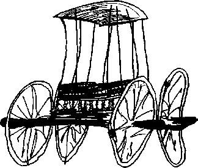
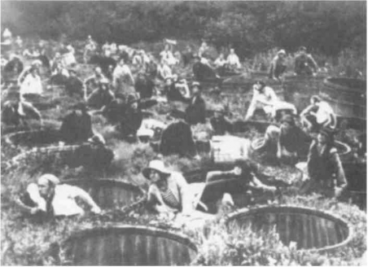

AXIOM I. The war machine is exterior to the State apparatus.
PROPOSITION I. This exteriority is first attested to in mythology, epic, drama, and games.
Georges Dumezil, in his definitive analyses of Indo-European mythology, has shown that political sovereignty, or domination, has two heads: the magician-king and the jurist-priest. Rex and flamen, raj and Brahman, Romulus and Numa, Varuna and Mitra, the despot and the legislator, the binder and the organizer. Undoubtedly, these two poles stand in opposition term by term, as the obscure and the clear, the violent and the calm, the quick and the weighty, the fearsome and the regulated, the “bond” and the “pact,” etc. But their opposition is only relative; they function as a pair, in alternation, as though they expressed a division of the One or constituted in themselves a sovereign unity. “At once antithetical and complementary, necessary to one another and consequently without hostility, lacking a mythology of conflict: a specification on any one level automatically calls forth a homologous specification on another. The two together exhaust the field of the function.” They are the principal elements of a State apparatus that proceeds by a One-Two, distributes binary distinctions, and forms a milieu of interiority. It is a double articulation that makes the State apparatus into a stratum.
It will be noted that war is not contained within this apparatus. Either the State has at its disposal a violence that is not channeled through war — either it uses police officers and jailers in place of warriors, has no arms and no need of them, operates by immediate, magical capture, “seizes” and “binds,” preventing all combat — or, the State acquires an army, but in a way that presupposes a juridical integration of war and the organization of a military function.2 As for the war machine in itself, it seems to be irreducible to the State apparatus, to be outside its sovereignty and prior to its law: it comes from elsewhere. Indra, the warrior god, is in opposition to Varuna no less than to Mitra? He can no more be reduced to one or the other than he can constitute a third of their kind. Rather, he is like a pure and immeasurable multiplicity, the pack, an irruption of the ephemeral and the power of metamorphosis. He unties the bond just as he betrays the pact. He brings a furor to bear against sovereignty, a celerity against gravity, secrecy against the public, a power (puissance) against sovereignty, a machine against the apparatus. He bears witness to another kind of justice, one of incomprehensible cruelty at times, but at others of unequaled pity as well (because he unties bonds…).4 He bears witness, above all, to other relations with women, with animals, because he sees all things in relations of becoming, rather than implementing binary distributions between “states”: a veritable becoming-animal of the warrior, a becoming-woman, which lies outside dualities of terms as well as correspondences between relations. In every respect, the war machine is of another species, another nature, another origin than the State apparatus.
Let us take a limited example and compare the war machine and the State apparatus in the context of the theory of games. Let us take chess and Go, from the standpoint of the game pieces, the relations between the pieces and the space involved. Chess is a game of State, or of the court: the emperor of China played it. Chess pieces are coded; they have an internal nature and intrinsic properties from which their movements, situations, and confrontations derive. They have qualities; a knight remains a knight, a pawn a pawn, a bishop a bishop. Each is like a subject of the statement endowed with a relative power, and these relative powers combine in a subject of enunciation, that is, the chess player or the game’s form of interiority. Go pieces, in contrast, are pellets, disks, simple arithmetic units, and have only an anonymous, collective, or third-person function: “It” makes a move. “It” could be a man, a woman, a louse, an elephant. Go pieces are elements of a nonsubjectified machine assemblage with no intrinsic properties, only situational ones. Thus the relations are very different in the two cases. Within their milieu of interiority, chess pieces entertain biunivocal relations with one another, and with the adversary’s pieces: their functioning is structural. On the other hand, a Go piece has only a milieu of exteriority, or extrinsic relations with nebulas or constellations, according to which it fulfills functions of insertion or situation, such as bordering, encircling, shattering. All by itself, a Go piece can destroy an entire constellation synchronically; a chess piece cannot (or can do so diachronically only). Chess is indeed a war, but an institutionalized, regulated, coded war, with a front, a rear, battles. But what is proper to Go is war without battle lines, with neither confrontation nor retreat, without battles even: pure strategy, whereas chess is a semiology. Finally, the space is not at all the same: in chess, it is a question of arranging a closed space for oneself, thus of going from one point to another, of occupying the maximum number of squares with the minimum number of pieces. In Go, it is a question of arraying oneself in an open space, of holding space, of maintaining the possibility of springing up at any point: the movement is not from one point to another, but becomes perpetual, without aim or destination, without departure or arrival. The “smooth” space of Go, as against the “striated” space of chess. The nomos of Go against the State of chess, nomos against polis. The difference is that chess codes and decodes space, whereas Go proceeds altogether differently, territorializing or deterritorializing it (make the outside a territory in space; consolidate that territory by the construction of a second, adjacent territory; deterritorialize the enemy by shattering his territory from within; deterritorialize oneself by renouncing, by going elsewhere…). Another justice, another movement, another space-time.
“They come like fate, without reason, consideration, or pretext…” “In some way that is incomprehensible they have pushed right into the capital. At any rate, here they are; it seems that every morning there are more of them.”5 Luc de Heusch analyzes a Bantu myth that leads us to the same schema: Nkongolo, an indigenous emperor and administrator of public works, a man of the public and a man of the police, gives his half-sisters to the hunter Mbidi, who assists him and then leaves. Mbidi’s son, a man of secrecy, joins up with his father, only to return from the outside with that inconceivable thing, an army. He kills Nkongolo and proceeds to build a new State.6 “Between” the magical-despotic State and the juridical State containing a military institution, we see the flash of the war machine, arriving from without.
From the standpoint of the State, the originality of the man of war, his eccentricity, necessarily appears in a negative form: stupidity, deformity, madness, illegitimacy, usurpation, sin. Dumezil analyzes the three “sins” of the warrior in the Indo-European tradition: against the king, against the priest, against the laws originating in the State (for example, a sexual transgression that compromises the distribution of men and women, or even a betrayal of the laws of war as instituted by the State).7 The warrior is in the position of betraying everything, including the function of the military, or of understanding nothing. It happens that historians, both bourgeois and Soviet, will follow this negative tradition and explain how Genghis Khan understood nothing: he “didn’t understand” the phenomenon of the city. An easy thing to say. The problem is that the exteriority of the war machine in relation to the State apparatus is everywhere apparent but remains difficult to conceptualize. It is not enough to affirm that the war machine is external to the apparatus. It is necessary to reach the point of conceiving the war machine as itself a pure form of exteriority, whereas the State apparatus constitutes the form of interiority we habitually take as a model, or according to which we are in the habit of thinking. What complicates everything is that this extrinsic power of the war machine tends, under certain circumstances, to become confused with one of the two heads of the State apparatus. Sometimes it is confused with the magic violence of the State, at other times with the State’s military institution. For instance, the war machine invents speed and secrecy; but there is all the same a certain speed and a certain secrecy that pertain to the State, relatively, secondarily. So there is a great danger of identifying the structural relation between the two poles of political sovereignty, and the dynamic interrelation of these two poles, with the power of war. Dumezil cites the lineage of the Roman kings: there is a Romulus-Numa relation that recurs throughout a series, with variants and an alternation between these two types of equally legitimate rulers; but there is also a relation with an “evil king,” Tullus Hostilius, Tarquinius Superbus, an upsurge of the warrior as a disquieting and illegitimate character.8 Shakespeare’s kings could also be invoked: even violence, murders, and perversion do not prevent the State lineage from producing “good” kings; but a disturbing character like Richard III slips in, announcing from the outset his intention to reinvent a war machine and impose its line (deformed, treacherous and traitorous, he claims a “secret close intent”9 totally different from the conquest of State power, and another — an other — relation with women). In short, whenever the irruption of war power is confused with the line of State domination, everything gets muddled; the war machine can then be understood only through the categories of the negative, since nothing is left that remains outside the State. But, returned to its milieu of exteriority, the war machine is seen to be of another species, of another nature, of another origin. One would have to say that it is located between the two heads of the State, between the two articulations, and that it is necessary in order to pass from one to the other. But “between” the two, in that instant, even ephemeral, if only a flash, it proclaims its own irreducibility. The State has no war machine of its own; it can only appropriate one in the form of a military institution, one that will continually cause it problems. This explains the mistrust States have toward their military institutions, in that the military institution inherits an extrinsic war machine. Karl von Clausewitz has a general sense of this situation when he treats the flow of absolute war as an Idea that States partially appropriate according to their political needs, and in relation to which they are more or less good “conductors.”
Trapped between the two poles of political sovereignty, the man of war seems outmoded, condemned, without a future, reduced to his own fury, which he turns against himself. The descendants of Hercules, Achilles, then Ajax, have enough strength left to proclaim their independence from Agamemnon, a man of the old State. But they are powerless when it comes to Ulysses, a man of the nascent modern State, the first man of the modern State. And it is Ulysses who inherits Achilles’ arms, only to convert them to other uses, submitting them to the laws of the State — not Ajax, who is condemned by the goddess he defied and against whom he sinned.10 No one has portrayed the situation of the man of war, at once eccentric and condemned, better than Kleist. In Penthesilea, Achilles is already separated from his power: the war machine has passed over to the Amazons, a Stateless woman-people whose justice, religion, and loves are organized uniquely in a war mode. Descendants of the Scythians, the Amazons spring forth like lightning, “between” the two States, the Greek and the Trojan. They sweep away everything in their path. Achilles is brought before his double, Penthesilea. And in his ambiguous struggle, Achilles is unable to prevent himself from marrying the war machine, or from loving Penthesilea, and thus from betraying Agamemnon and Ulysses at the same time. Nevertheless, he already belongs enough to the Greek State that Penthesilea, for her part, cannot enter the passional relation of war with him without herself betraying the collective law of her people, the law of the pack that prohibits “choosing” the enemy and entering into one-to-one relationships or binary distinctions.
Throughout his work, Kleist celebrates the war machine, setting it against the State apparatus in a struggle that is lost from the start. Doubtless Arminius heralds a Germanic war machine that breaks with the imperial order of alliances and armies, and stands forever opposed to the Roman State. But the Prince of Homburg lives only in a dream and stands condemned for having reached victory in disobedience of the law of the State. As for Kohlhaas, his war machine can no longer be anything more than banditry. Is it the destiny of the war machine, when the State triumphs, to be caught in this alternative: either to be nothing more than the disciplined, military organ of the State apparatus, or to turn against itself, to become a double suicide machine for a solitary man and a solitary woman? Goethe and Hegel, State thinkers both, see Kleist as a monster, and Kleist has lost from the start. Why is it, then, that the most uncanny modernity lies with him? It is because the elements of his work are secrecy, speed, and affect.” And in Kleist the secret is no longer a content held within a form of interiority; rather, it becomes a form, identified with the form of exteriority that is always external to itself. Similarly, feelings become uprooted from the interiority of a “subject,” to be projected violently outward into a milieu of pure exteriority that lends them an incredible velocity, a catapulting force: love or hate, they are no longer feelings but affects. And these affects are so many instances of the becoming-woman, the becoming-animal of the warrior (the bear, she-dogs). Affects transpierce the body like arrows, they are weapons of war. The deterritorialization velocity of affect. Even dreams (Homburg’s, Pentheselea’s) are externalized, by a system of relays and plug-ins, extrinsic linkages belonging to the war machine. Broken rings. This element of exteriority — which dominates everything, which Kleist invents in literature, which he is the first to invent — will give time a new rhythm: an endless succession of catatonic episodes or fainting spells, and flashes or rushes. Catatonia is: “This affect is too strong for me,” and a flash is: “The power of this affect sweeps me away,” so that the Self (Moi) is now nothing more than a character whose actions and emotions are desubjectified, perhaps even to the point of death. Such is Kleist’s personal formula: a succession of flights of madness and catatonic freezes in which no subjective interiority remains. There is much of the East in Kleist: the Japanese fighter, interminably still, who then makes a move too quick to see. The Go player. Many things in modern art come from Kleist. Goethe and Hegel are old men next to Kleist. Could it be that it is at the moment the war machine ceases to exist, conquered by the State, that it displays to the utmost its irreducibility, that it scatters into thinking, loving, dying, or creating machines that have at their disposal vital or revolutionary powers capable of challenging the conquering State? Is the war machine already overtaken, condemned, appropriated as part of the same process whereby it takes on new forms, undergoes a metamorphosis, affirms its irreducibility and exteriority, and deploys that milieu of pure exteriority that the occidental man of the State, or the occidental thinker, continually reduces to something other than itself?
PROBLEM I. Is there a way of warding off the formation of a State apparatus (or its equivalents in a group)?
PROPOSITION II. The exteriority of the war machine is also attested to by ethnology (a tribute to the memory of Pierre Clastres).
Primitive, segmentary societies have often been defined as societies without a State, in other words, societies in which distinct organs of power do not appear. But the conclusion has been that these societies did not reach the degree of economic development, or the level of political differentiation, that would make the formation of the State apparatus both possible and inevitable: the implication is that primitive people “don’t understand” so complex an apparatus. The prime interest in Pierre Clastres’s theories is that they break with this evolutionist postulate. Not only does he doubt that the State is the product of an ascribable economic development, but he asks if it is not a potential concern of primitive societies to ward off or avert that monster they supposedly do not understand. Warding off the formation of a State apparatus, making such a formation impossible, would be the objective of a certain number of primitive social mechanisms, even if they are not consciously understood as such. To be sure, primitive societies have chiefs. But the State is not defined by the existence of chiefs; it is defined by the perpetuation or conservation of organs of power. The concern of the State is to conserve. Special institutions are thus necessary to enable a chief to become a man of State, but diffuse, collective mechanisms are just as necessary to prevent a chief from becoming one. Mechanisms for warding off, preventive mechanisms, are a part of chieftainship and keep an apparatus distinct from the social body from crystallizing. Clastres describes the situation of the chief, who has no instituted weapon other than his prestige, no other means of persuasion, no other rule than his sense of the group’s desires. The chief is more like a leader or a star than a man of power and is always in danger of being disavowed, abandoned by his people. But Clastres goes further, identifying war in primitive societies as the surest mechanism directed against the formation of the State: war maintains the dispersal and segmentarity of groups, and the warrior himself is caught in a process of accumulating exploits leading him to solitude and a prestigious but powerless death.12 Clastres can thus invoke natural Law while reversing its principal proposition: just as Hobbes saw clearly that the State was against war, so war is against the State, and makes it impossible. It should not be concluded that war is a state of nature, but rather that it is the mode of a social state that wards off and prevents the State. Primitive war does not produce the State any more than it derives from it. And it is no better explained by exchange than by the State: far from deriving from exchange, even as a sanction for its failure, war is what limits exchanges, maintains them in the framework of “alliances”; it is what prevents them from becoming a State factor, from fusing groups.
The importance of this thesis is first of all to draw attention to collective mechanisms of inhibition. These mechanisms may be subtle, and function as micromechanisms. This is easily seen in certain band or pack phenomena. For example, in the case of gangs of street children in Bogota, Jacques Meunier cites three ways in which the leader is prevented from acquiring stable power: the members of the band meet and undertake their theft activity in common, with collective sharing of the loot, but they disperse to eat or sleep separately; also, and especially, each member of the band is paired off with one, two, or three other members, so if he has a disagreement with the leader, he will not leave alone but will take along his allies, whose combined departure will threaten to break up the entire gang; finally, there is a diffuse age limit, and at about age fifteen a member is inevitably induced to quit the gang.13 These mechanisms cannot be understood without renouncing the evolutionist vision that sees bands or packs as a rudimentary, less organized, social form. Even in bands of animals, leadership is a complex mechanism that does not act to promote the strongest but rather inhibits the installation of stable powers, in favor of a fabric of immanent relations.14 One could just as easily compare the form “high-society life” to the form “sociability” among the most highly evolved men and women: high-society groups are similar to gangs and operate by the diffusion of prestige rather than by reference to centers of power, as in social groupings (Proust clearly showed this noncorrespondence of high-society values and social values). Eugene Sue, a man of high society and a dandy, whom legitimists reproached for frequenting the Orleans family, used to say: “I’m not on the side of the family, I side with the pack.” Packs, bands, are groups of the rhizome type, as opposed to the arborescent type that centers around organs of power. That is why bands in general, even those engaged in banditry or high-society life, are metamorphoses of a war machine formally distinct from all State apparatuses or their equivalents, which are instead what structure centralized societies. We certainly would not say that discipline is what defines a war machine: discipline is the characteristic required of armies after the State has appropriated them. The war machine answers to other rules. We are not saying that they are better, of course, only that they animate a fundamental indiscipline of the warrior, a questioning of hierarchy, perpetual blackmail by abandonment or betrayal, and a very volatile sense of honor, all of which, once again, impedes the formation of the State.
But why does this argument fail to convince us entirely? We follow Clastres when he demonstrates that the State is explained neither by a development of productive forces nor by a differentiation of political forces. It is the State, on the contrary, that makes possible the undertaking of large-scale projects, the constitution of surpluses, and the organization of the corresponding public functions. The State is what makes the distinction between governors and governed possible. We do not see how the State can be explained by what it presupposes, even with recourse to dialectics. The State seems to rise up in a single stroke, in an imperial form, and does not depend on progressive factors. Its on-the-spot emergence is like a stroke of genius, the birth of Athena. We also follow Clastres when he shows that the war machine is directed against the State, either against potential States whose formation it wards off in advance, or against actual States whose destruction it purposes. No doubt the war machine is realized more completely in the “barbaric” assemblages of nomadic warriors than in the “savage” assemblages of primitive societies. In any case, it is out of the question that the State could be the result of a war in which the conquerors imposed, by the very fact of their victory, a new law on the vanquished, because the organization of the war machine is directed against the State-form, actual or virtual. The State is no better accounted for as a result of war than by a progression of economic or political forces. This is where Clastres locates the break: between “primitive” counter-State societies and “monstrous” State societies whose formation it is no longer possible to explain. Clastres is fascinated by the problem of “voluntary servitude,” in the manner of La Boetie: In what way did people want or desire servitude, which most certainly did not come to them as the outcome of an involuntary and unfortunate war? They did, after all, have counter-State mechanisms at their disposal: So how and why the State? Why did the State triumph? The more deeply Clastres delved into the problem, the more he seemed to deprive himself of the means of resolving it.’5 He tended to make primitive societies hypostases, self-sufficient entities (he insisted heavily on this point). He made their formal exteriority into a real independence. Thus he remained an evolutionist, and posited a state of nature. Only this state of nature was, according to him, a fully social reality instead of a pure concept, and the evolution was a sudden mutation instead of a development. For on the one hand, the State rises up in a single stroke, fully formed; on the other, the counter-State societies use very specific mechanisms to ward it off, to prevent it from arising. We believe that these two propositions are valid but that their interlinkage is flawed. There is an old scenario: “from clans to empires,” or “from bands to kingdoms.” But nothing says that this constitutes an evolution, since bands and clans are no less organized than empire-kingdoms. We will never leave the evolution hypothesis behind by creating a break between the two terms, that is, by endowing bands with self-sufficiency and the State with an emergence all the more miraculous and monstrous. We are compelled to say that there has always been a State, quite perfect, quite complete. The more discoveries archaeologists make, the more empires they uncover. The hypothesis of the Urstaat seems to be verified: “The State clearly dates back to the most remote ages of humanity.” It is hard to imagine primitive societies that would not have been in contact with imperial States, at the periphery or in poorly controlled areas. But of greater importance is the inverse hypothesis: that the State itself has always been in a relation with an outside and is inconceivable independent of that relationship. The law of the State is not the law of All or Nothing (State societies or counter-State societies) but that of interior and exterior. The State is sovereignty. But sovereignty only reigns over what it is capable of internalizing, of appropriating locally. Not only is there no universal State, but the outside of States cannot be reduced to “foreign policy,” that is, to a set of relations among States. The outside appears simultaneously in two directions: huge worldwide machines branched out over the entire ecumenon at a given moment, which enjoy a large measure of autonomy in relation to the States (for example, commercial organization of the “multinational” type, or industrial complexes, or even religious formations like Christianity, Islam, certain prophetic or messianic movements, etc.); but also the local mechanisms of bands, margins, minorities, which continue to affirm the rights of segmentary societies in opposition to the organs of State power. The modern world can provide us today with particularly well developed images of these two directions: worldwide ecumenical machines, but also a neoprimitivism, a new tribal society as described by Marshall McLuhan. These directions are equally present in all social fields, in all periods. It even happens that they partially merge. For example, a commercial organization is also a band of pillage, or piracy, for part of its course and in many of its activities; or it is in bands that a religious formation begins to operate. What becomes clear is that bands, no less than worldwide organizations, imply a form irreducible to the State and that this form of exteriority necessarily presents itself as a diffuse and polymorphous war machine. It is a nomos very different from the “law.” The State-form, as a form of interiority, has a tendency to reproduce itself, remaining identical to itself across its variations and easily recognizable within the limits of its poles, always seeking public recognition (there is no masked State). But the war machine’s form of exteriority is such that it exists only in its own metamorphoses; it exists in an industrial innovation as well as in a technological invention, in a commercial circuit as well as in a religious creation, in all flows and currents that only secondarily allow themselves to be appropriated by the State. It is in terms not of independence, but of coexistence and competition in a perpetual field of interaction, that we must conceive of exteriority and interiority, war machines of metamorphosis and State apparatuses of identity, bands and kingdoms, megamachines and empires. The same field circumscribes its interiority in States, but describes its exteriority in what escapes States or stands against States.
PROPOSITION III. The exteriority of the war ma chine is also attested to by epistemology, which intimates the existence and perpetuation of a “nomad”or “minor science.”
There is a kind of science, or treatment of science, that seems very difficult to classify, whose history is even difficult to follow. What we are referring to are not “technologies” in the usual sense of the term. But neither are they “sciences” in the royal or legal sense established by history. According to a recent book by Michel Serres, both the atomic physics of Democritus and Lucretius and the geometry of Archimedes are marked by it.16 The characteristics of this kind of eccentric science would seem to be the following:
First of all, it uses a hydraulic model, rather than being a theory of solids treating fluids as a special case; ancient atomism is inseparable from flows, and flux is reality itself, or consistency.
The model in question is one of becoming and heterogeneity, as opposed to the stable, the eternal, the identical, the constant. It is a “paradox” to make becoming itself a model, and no longer a secondary characteristic, a copy; in the Timaeus, Plato raises this possibility, but only in order to exclude it and conjure it away in the name of royal science. By contrast, in atomism, just such a model of heterogeneity, and of passage or becoming in the heterogeneous, is furnished by the famed declination of the atom. The clinamen, as the minimum angle, has meaning only between a straight line and a curve, the curve and its tangent, and constitutes the original curvature of the movement of the atom. The clinamen is the smallest angle by which an atom deviates from a straight path.17 It is a passage to the limit, an exhaustion, a paradoxical “exhaustive” model. The same applies to Archimedean geometry, in which the straight line, defined as “the shortest path between two points,” is just a way of defining the length of a curve in a predifferential calculus.
One no longer goes from the straight line to its parallels, in a lamellar or laminar flow,18 but from a curvilinear declination to the formation of spirals and vortices on an inclined plane: the greatest slope for the smallest angle. From turba to turbo: in other words, from bands or packs of atoms to the great vortical organizations.19 The model is a vortical one; it operates in an open space throughout which things-flows are distributed, rather than plotting out a closed space for linear and solid things. It is the difference between a smooth (vectorial, projective, or topological) space and a striated (metric) space: in the first case “space is occupied without being counted,” and in the second case “space is counted in order to be occupied.”20
Finally, the model is problematic, rather than theorematic: figures are considered only from the viewpoint of the affections that befall them: sections, ablations, adjunctions, projections. One does not go by specific differences from a genus to its species, or by deduction from a stable essence to the properties deriving from it, but rather from a problem to the accidents that condition and resolve it. This involves all kinds of deformations, transmutations, passages to the limit, operations in which each figure designates an “event” much more than an essence; the square no longer exists independently of a quadrature, the cube of a cubature, the straight line of a rectification. Whereas the theorem belongs to the rational order, the problem is affective and is inseparable from the metamorphoses, generations, and creations within science itself. Despite what Gabriel Marcel may say, the problem is not an “obstacle”; it is the surpassing of the obstacle, a pro-jection, in other words, a war machine. All of this movement is what royal science is striving to limit when it reduces as much as possible the range of the “problem-element” and subordinates it to the “theorem-element.”21
This Archimedean science, or this conception of science, is bound up in an essential way with the war machine: theproblemata are the war machine itself and are inseparable from inclined planes, passages to the limit, vortices, and projections. It would seem that the war machine is projected into an abstract knowledge formally different from the one that doubles the State apparatus. It would seem that a whole nomad science develops eccentrically, one that is very different from the royal or imperial sciences. Furthermore, this nomad science is continually “barred,” inhibited, or banned by the demands and conditions of State science. Archimedes, vanquished by the Roman State, becomes a symbol.22 The fact is that the two kinds of science have different modes of formalization, and State science continually imposes its form of sovereignty on the inventions of nomad science. State science retains of nomad science only what it can appropriate; it turns the rest into a set of strictly limited formulas without any real scientific status, or else simply represses and bans it. It is as if the “savants” of nomad science were caught between a rock and a hard place, between the war machine that nourishes and inspires them and the State that imposes upon them an order of reasons. The figure of the engineer (in particular the military engineer), with all its ambivalence, is illustrative of this situation. Most significant are perhaps borderline phenomena in which nomad science exerts pressure on State science, and, conversely, State science appropriates and transforms the elements of nomad science. This is true of the art of encampments, “castrametation,” which has always mobilized projections and inclined planes: the State does not appropriate this dimension of the war machine without submitting it to civil and metric rules that strictly limit, control, localize nomad science, and without keeping it from having repercussions throughout the social field (in this respect, Vauban is like a repeat of Archimedes, and suffers an analogous defeat). It is true of descriptive and projective geometry, which royal science would like to turn into a mere practical dependency of analytic, or so-called higher, geometry (thus the ambiguous situation of Monge and Poncelet as “savants”).23 It is also true of differential calculus. For a long time, it had only parascientific status and was labeled a “Gothic hypothesis”; royal science only accorded it the value of a convenient convention or a well-founded fiction. The great State mathematicians did their best to improve its status, but precisely on the condition that all the dynamic, nomadic notions — such as becoming, heterogeneity, infinitesimal, passage to the limit, continuous variation — be eliminated and civil, static, and ordinal rules be imposed upon it (Carnot’s ambiguous position in this respect). Finally, it is true of the hydraulic model, for it is certain that the State itself needs a hydraulic science (there is no going back on Wittfogel’s theses on the importance of large-scale waterworks for an empire). But it needs it in a very different form, because the State needs to subordinate hydraulic force to conduits, pipes, embankments, which prevent turbulence, which constrain movement to go from one point to another, and space itself to be striated and measured, which makes the fluid depend on the solid, and flows proceed by parallel, laminar layers. The hydraulic model of nomad science and the war machine, on the other hand, consists in being distributed by turbulence across a smooth space, in producing a movement that holds space and simultaneously affects all of its points, instead of being held by space in a local movement from one specified point to another.24 Democritus, Menaechmus, Archimedes, Vauban, Desargues, Bernoulli, Monge, Carnot, Poncelet, Perronet, etc.: in each case a monograph would be necessary to take into account the special situation of these savants whom State science used only after restraining or disciplining them, after repressing their social or political conceptions.
The sea as a smooth space is a specific problem of the war machine. As Virilio shows, it is at sea that the problem of the fleet in being is posed, in other words, the task of occupying an open space with a vortical movement that can rise up at any point. In this respect, the recent studies on rhythm, on the origin of that notion, do not seem entirely convincing. For we are told that rhythm has nothing to do with the movement of waves but rather that it designates “form” in general, and more specifically the form of a “measured, cadenced” movement.25 However, rhythm is never the same as measure. And though the atomist Democritus is one of the authors who speak of rhythm in the sense of form, it should be borne in mind that he does so under very precise conditions of fluctuation and that the forms made by atoms are primarily large, nonmetric aggregates, smooth spaces such as the air, the sea, or even the earth (magnae res). There is indeed such a thing as measured, cadenced rhythm, relating to the coursing of a river between its banks or to the form of a striated space; but there is also a rhythm without measure, which relates to the upswell of a flow, in other words, to the manner in which a fluid occupies a smooth space.
This opposition, or rather this tension-limit between the two kinds of science — nomad, war machine science and royal, State science — reappears at different moments, on different levels. The work of Anne Querrien enables us to identify two of these moments; one is the construction of Gothic cathedrals in the twelfth century, the other the construction of bridges in the eighteenth and nineteenth centuries.26 Gothic architecture is indeed inseparable from a will to build churches longer and taller than the Romanesque churches. Ever farther, ever higher … But this difference is not simply quantitative; it marks a qualitative change: the static relation, form-matter, tends to fade into the background in favor of a dynamic relation, material-forces. It is the cutting of the stone that turns it into material capable of holding and coordinating forces of thrust, and of constructing ever higher and longer vaults. The vault is no longer a form but the line of continuous variation of the stones. It is as if Gothic conquered a smooth space, while Romanesque remained partially within a striated space (in which the vault depends on the juxtaposition of parallel pillars). But stone cutting is inseparable from, on the one hand, a plane of projection at ground level, which functions as a plane limit, and, on the other hand, a series of successive approximations (squaring), or placings-in-variation of voluminous stones. Of course, one appealed to the theorematic science of Euclid in order to find a foundation for the enterprise: mathematical figures and equations were thought to be the intelligible form capable of organizing surfaces and volumes. But according to the legend, Bernard de Clairvaux quickly abandoned the effort as too “difficult,” appealing to the specificity of an operative, Archimedean geometry, a projective and descriptive geometry defined as a minor science, more a mathegraphy than a matheology. His journeyman, the monk-mason Garin de Troyes, speaks of an operative logic of movement enabling the “initiate” to draw, then hew the volumes “in penetration in space,” to make it so that “the cutting line propels the equation” (le trait pousse le chiffre).21 One does not represent, one engenders and traverses. This science is characterized less by the absence of equations than by the very different role they play: instead of being good forms absolutely that organize matter, they are “generated” as “forces of thrust” (poussees) by the material, in a qualitative calculus of the optimum. This whole current of Archimedean geometry was taken to its highest expression, but was also brought to a temporary standstill, by the remarkable seventeenth-century mathematician Desargues. Like most of his kind, Desargues wrote little; he nevertheless exerted a great influence through his actions and left outlines, rough drafts, and projects, all centered on problem-events: “Lamentations,” “draft project for the cutting of stones,” “draft project for grappling with the events of the encounters of a cone and a plane,. .. Desargues, however, was condemned by the parlement of Paris, opposed by the king’s secretary; his practices of perspective were banned.28 Royal, or State, science only tolerates and appropriates stone cutting by means of templates (the opposite of squaring), under conditions that restore the primacy of the fixed model of form, mathematical figures, and measurement. Royal science only tolerates and appropriates perspective if it is static, subjected to a central black hole divesting it of its heuristic and ambulatory capacities. But the adventure, or event, of Desargues is the same one that had already occurred among the Gothic “journeymen” on a collective level. For not only did the Church, in its imperial form, feel the need to strictly control the movement of this nomad science (it entrusted the Templars with the responsibility of determining its locations and objects, governing the work sites, and regulating construction), but the secular State, in its royal form, turned against the Templars themselves, banning the guilds for a number of reasons, at least one of which was the prohibition of this operative or minor geometry.
Is Anne Querrien right to find yet another echo of the same story in the case of bridges in the eighteenth century? Doubtless, the conditions were very different, for the division of labor according to State norms was by then an accomplished fact. But the fact remains that in the government agency in charge of bridges and roadways, roadways were under a well-centralized administration while bridges were still the object of active, dynamic, and collective experimentation. Trudaine organized unusual, open “general assemblies” in his home. Perronet took as his inspiration a supple model originating in the Orient: The bridge should not choke or obstruct the river. To the heaviness of the bridge, to the striated space of thick and regular piles, he opposed a thinning and discontinuity of the piles, surbase, and vault, a lightness and continuous variation of the whole. But his attempt soon ran up against principled opposition; the State, in naming Perronet director of the school, followed a frequently used procedure that inhibited experimentation more than crowning its achievements. The whole history of the Ecole des Ponts et Chaussees (School of Bridges and Roadways) illustrates how this old, plebeian “corps” was subordinated to the Ecole des Mines, the Ecole des Travaux Publics, and the Ecole Polytechnique, at the same time as its activities were increasingly normalized.29 We thus come to the question, What is a collective bodyl Undoubtedly, the great collective bodies of a State are differentiated and hierarchical organisms that on the one hand enjoy a monopoly over a power or function and on the other hand send out local representatives. They have a special relation to families, because they link the family model to the State model at both ends and regard themselves as “great families” of functionaries, clerks, intendants, or farmers. Yet it seems that in many of these collective bodies there is something else at work that does not fit into this schema. It is not just their obstinate defense of their privileges. It is also their aptitude — even caricatural or seriously deformed — to constitute themselves as a war machine, following other models, another dynamism, a nomadic ambition, over against the State. As an example, there is the very old problem of the lobby, a group with fluid contours, whose position is very ambiguous in relation to the State it wishes to “influence” and the war machine it wishes to promote, to whatever ends.30
A body (corps) is not reducible to an organism, any more than esprit de corps is reducible to the soul of an organism. Spirit is not better, but it is volatile, whereas the soul is weighted, a center of gravity. Must we invoke a military origin of the collective body and esprit de corps? “Military” is not the part that counts, but rather the distant nomadic origin. Ibn Khaldun defines the nomad war machine by: families or lineages PLUS esprit de corps. The war machine entertains a relation to families that is very different from its relation to the State. In the war machine, the family is a band vector instead of a fundamental cell; a genealogy is transferred from one family to another according to the aptitude of a given family at a given time to realize the maximum of “agnatic solidarity.” Here, it is not the public eminence of a family that determines its place in a State organism but the reverse; it is the secret power (puissance), or strength of solidarity, and the corresponding genealogical mobility that determine its eminence in a war body.31 This has to do neither with the monopoly of an organic power (pouvoir) nor with local representation, but is related to the potential (puissance) of a vortical body in a nomad space. Of course, the great bodies of a modern State can hardly be thought of as Arab tribes. What we wish to say, rather, is that collective bodies always have fringes or minorities that reconstitute equivalents of the war machine — in sometimes quite unforeseen forms — in specific assemblages such as building bridges or cathedrals or rendering judgments or making music or instituting a science, a technology
… A collective body of captains asserts its demands through the organization of the officers and the organism of the superior officers. There are always periods when the State as organism has problems with its own collective bodies, when these bodies, claiming certain privileges, are forced in spite of themselves to open onto something that exceeds them, a short revolutionary instant, an experimental surge. A confused situation: each time it occurs, it is necessary to analyze tendencies and poles, the nature of the movements. All of a sudden, it is as if the collective body of the notary publics were advancing like Arabs or Indians, then regrouping and reorganizing: a comic opera where you never know what is going to happen next (even the cry “The police are with us!” is sometimes heard).
Husserl speaks of a protogeometry that addresses vague, in other words, vagabond or nomadic, morphological essences. These essences are distinct from sensible things, as well as from ideal, royal, or imperial essences. Protogeometry, the science dealing with them, is itself vague, in the etymological sense of “vagabond”: it is neither inexact like sensible things nor exact like ideal essences, but anexactyet rigorous (“essentially and not accidentally inexact”). The circle is an organic, ideal, fixed essence, but roundness is a vague and fluent essence, distinct both from the circle and things that are round (a vase, a wheel, the sun). A theorematic figure is a fixed essence, but its transformations, distortions, ablations, and augmentations, all of its variations, form problematic figures that are vague yet rigorous, “lens-shaped,” “umbelliform,” or “indented.” It could be said that vague essences extract from things a determination that is more than thinghood (choseite), which is that of corporeality (corporeite), and which perhaps even implies an esprit de corps.32 But why does Husserl see this as a protogeometry, a kind of halfway point and not a pure science? Why does he make pure essences dependent upon a passage to the limit, when any passage to the limit belongs as such to the vague? What we have, rather, are two formally different conceptions of science, and, ontologically, a single field of interaction in which royal science continually appropriates the contents of vague or nomad science while nomad science continually cuts the contents of royal science loose. At the limit, all that counts is the constantly shifting borderline. In Husserl (and also in Kant, though in the opposite direction: roundness as the “schema” of the circle), we find a very accurate appreciation of the irreducibility of nomad science, but simultaneously the concern of a man of the State, or one who sides with the State, to maintain a legislative and constituent primacy for royal science. Whenever this primacy is taken for granted, nomad science is portrayed as a prescientific or parascientific or subscientific agency. And most important, it becomes impossible to understand the relations between science and technology, science and practice, because nomad science is not a simple technology or practice, but a scientific field in which the problem of these relations is brought out and resolved in an entirely different way than from the point of view of royal science. The State is perpetually producing and reproducing ideal circles, but a war machine is necessary to make something round. Thus the specific characteristics of nomad science are what need to be determined in order to understand both the repression it encounters and the interaction “containing” it.
Nomad science does not have the same relation to work as royal science. Not that the division of labor in nomad science is any less thorough; it is different. We know of the problems States have always had with journeymen’s associations, or compagnonnages, the nomadic or itinerant bodies of the type formed by masons, carpenters, smiths, etc. Settling, seden-tarizing labor power, regulating the movement of the flow of labor, assigning it channels and conduits, forming corporations in the sense of organisms, and, for the rest, relying on forced manpower recruited on the spot (corvee) or among indigents (charity workshops) — this has always been one of the principal affairs of the State, which undertook to conquer both a band vagabondage and a body nomadism. Let us return to the example of Gothic architecture for a reminder of how extensively the journeymen traveled, building cathedrals near and far, scattering construction sites across the land, drawing on an active and passive power (mobility and the strike) that was far from convenient for the State. The State’s response was to take over management of the construction sites, merging all the divisions of labor in the supreme distinction between the intellectual and the manual, the theoretical and the practical, modeled upon the difference between “governors” and “governed.” In the nomad sciences, as in the royal sciences, we find the existence of a “plane,” but not at all in the same way. The ground-level plane of the Gothic journeyman is opposed to the metric plane of the architect, which is on paper and off site. The plane of consistency or composition is opposed to another plane, that of organization or formation. Stone cutting by squaring is opposed to stone cutting using templates, which implies the erection of a model for reproduction. It can be said not only that there is no longer a need for skilled or qualified labor, but also that there is a need for unskilled or unqualified labor, for a dequalification of labor. The State does not give power (pouvoir) to the intellectuals or conceptual innovators; on the contrary, it makes them a strictly dependent organ with an autonomy that is only imagined yet is sufficient to divest those whose job it becomes simply to reproduce or implement of all of their power (puissance). This does not shield the State from more trouble, this time with the body of intellectuals it itself engendered, but which asserts new nomadic and political claims. In any case, if the State always finds it necessary to repress the nomad and minor sciences, if it opposes vague essences and the operative geometry of the trait, it does so not because the content of these sciences is inexact or imperfect, or because of their magic or initiatory character, but because they imply a division of labor opposed to the norms of the State. The difference is not extrinsic: the way in which a science, or a conception of science, participates in the organization of the social field, and in particular induces a division of labor, is part of that science itself. Royal science is inseparable from a “hylomorphic” model implying both a form that organizes matter and a matter prepared for the form; it has often been shown that this schema derives less from technology or life than from a society divided into governors and governed, and later, intellectuals and manual laborers. What characterizes it is that all matter is assigned to content, while all form passes into expression. It seems that nomad science is more immediately in tune with the connection between content and expression in themselves, each of these two terms encompassing both form and matter. Thus matter, in nomad science, is never prepared and therefore homogenized matter, but is essentially laden with singularities (which constitute a form of content). And neither is expression formal; it is inseparable from pertinent traits (which constitute a matter of expression). This is an entirely different schema, as we shall see. We can get a preliminary idea of this situation by recalling the most general characteristic of nomad art, in which a dynamic connection between support and ornament replaces the matter-form dialectic. From the point of view of nomad science, which presents itself as an art as much as a technique, the division of labor fully exists, but it does not employ the form-matter duality (even in the case of biunivocal correspondences). Rather, it follows the connections between singularities of matter and traits of expression, and lodges on the level of these connections, whether they be natural or forced.33 This is another organization of work and of the social field through work.
It is instructive to contrast two models of science, after the manner of Plato in the Timaeus.34 One could be called Compars and the other Dispars. The compars is the legal or legalist model employed by royal science. The search for laws consists in extracting constants, even if those constants are only relations between variables (equations). An invariable form for variables, a variable matter of the invariant: such is the foundation of the hylomorphic schema. But for the dispars as an element of nomad science the relevant distinction is material-forces rather than matter-form. Here, it is not exactly a question of extracting constants from variables but of placing the variables themselves in a state of continuous variation. If there are still equations, they are adequations, inequations, differential equations irreducible to the algebraic form and inseparable from a sensible intuition of variation. They seize or determine singularities in the matter, instead of constituting a general form. They effect individuations through events or haecceities, not through the “object” as a compound of matter and form; vague essences are nothing other than haecceities. In all these respects, there is an opposition between the logos and the nomos, the law and the nomos, prompting the comment that the law still “savors of morality.”35 This does not mean, however, that the legal model knows nothing of forces, the play of forces. That it does is evident in the homogeneous space corresponding to the compars. Homogeneous space is in no way a smooth space; on the contrary, it is the form of striated space. The space of pillars. It is striated by the fall of bodies, the verticals of gravity, the distribution of matter into parallel layers, the lamellar and laminar movement of flows. These parallel verticals have formed an independent dimension capable of spreading everywhere, of formalizing all the other dimensions, of striating all of space in all of its directions, so as to render it homogeneous. The vertical distance between two points provided the mode of comparison for the horizontal distance between two other points. Universal attraction became the law of all laws, in that it set the rule for the biunivocal correspondence between two bodies; and each time science discovered a new field, it sought to formalize it in the same mode as the field of gravity. Even chemistry became a royal science only by virtue of a whole theoretical elaboration of the notion of weight. Euclidean space is founded on the famous parallel postulate, but the parallels in question are in the first place gravitational parallels, and correspond to the forces exerted by gravity on all the elements of a body presumed to fill that space. It is the point of application of the resultant of all of these parallel forces that remains invariable when their common direction is changed or the body is rotated (the center of gravity). In short, it seems that the force of gravity lies at the basis of a laminar, striated, homogeneous, and centered space; it forms the foundation for those multiplicities termed metric, or arborescent, whose dimensions are independent of the situation and are expressed with the aid of units and points (movements from one point to another). It was not some metaphysical concern, but an effectively scientific one, that frequently led scientists in the nineteenth century to ask if all forces were not reducible to gravity, or rather to the form of attraction that gives gravity a universal value (a constant relation for all variables) and biunivocal scope (two bodies at a time, and no more). It is the form of interiority of all science.
The nomos, or the dispars, is altogether different. But this is not to say that the other forces refute gravity or contradict attraction. Although it is true that they do not go against them, they do not result from them either; they do not depend on them but testify to events that are always supplementary or of “variable affects.” Each time a new field opened up in science — under conditions making this a far more important notion than that of form or object — it proved irreducible to the field of attraction and the model of the gravitational forces, although not contradictory to them. It affirmed a “more” or an excess, and lodged itself in that excess, that deviation. When chemistry took a decisive step forward, it was always by adding to the force of weight bonds of another type (for example, electric) that transformed the nature of chemical equations.36 But it will be noted that the simplest considerations of velocity immediately introduce the difference between vertical descent and curvilinear motion, or more generally between the straight line and the curve, in the differential form of the clinamen, or the smallest deviation, the minimum excess. Smooth space is precisely the space of the smallest deviation: therefore it has no homogeneity, except between infinitely proximate points, and the linking of proximities is effected independently of any determined path. It is a space of contact, of small tactile or manual actions of contact, rather than a visual space like Euclid’s striated space. Smooth space is a field without conduits or channels. A field, a heterogeneous smooth space, is wedded to a very particular type of multiplicity: nonmetric, acentered, rhizomatic multiplicities that occupy space without “counting” it and can “be explored only by legwork.” They do not meet the visual condition of being observable from a point in space external to them; an example of this is the system of sounds, or even of colors, as opposed to Euclidean space.
When we oppose speed and slowness, the quick and the weighty, Celeritas and Gravitas, this must not be seen as a quantitative opposition, or as a mythological structure (although Dumezil has established the mythological importance of this opposition, precisely in relation to the State apparatus and its natural “gravity”). The opposition is both qualitative and scientific, in that speed is not merely an abstract characteristic of movement in general but is incarnated in a moving body that deviates, however slightly, from its line of descent or gravity. Slow and rapid are not quantitative degrees of movement but rather two types of qualified movement, whatever the speed of the former or the tardiness of the latter. Strictly speaking, it cannot be said that a body that is dropped has a speed, however fast it falls; rather it has an infinitely decreasing slowness in accordance with the law of falling bodies. Laminar movement that striates space, that goes from one point to another, is weighty; but rapidity, celerity, applies only to movement that deviates to the minimum extent and thereafter assumes a vortical motion, occupying a smooth space, actually drawing smooth space itself. In this space, matter-flow can no longer be cut into parallel layers, and movement no longer allows itself to be hemmed into biunivocal relations between points. In this sense, the role of the qualitative opposition gravity-celerity, heavy-light, slow-rapid is not that of a quantifiable scientific determination but of a condition that is coextensive to science and that regulates both the separation and the mixing of the two models, their possible interpenetration, the domination of one by the other, their alternative. And the best formulation, that of Michel Serres, is indeed couched in terms of an alternative, whatever mixes or compositions there may be: “Physics is reducible to two sciences, a general theory of routes and paths, and a global theory of waves.”37
A distinction must be made between two types of science, or scientific procedures: one consists in “reproducing,” the other in “following.” The first involves reproduction, iteration and reiteration; the other, involving itineration, is the sum of the itinerant, ambulant sciences. Itineration is too readily reduced to a modality of technology, or of the application and verification of science. But this is not the case: following is not at all the same thing as reproducing, and one never follows in order to reproduce. The ideal of reproduction, deduction, or induction is part of royal science, at all times and in all places, and treats differences of time and place as so many variables, the constant form of which is extracted precisely by the law: for the same phenomena to recur in a gravitational and striated space it is sufficient for the same conditions to obtain, or for the same constant relation to hold between the differing conditions and the variable phenomena. Reproducing implies the permanence of a fixed point of view that is external to what is reproduced: watching the flow from the bank. But following is something different from the ideal of reproduction. Not better, just different. One is obliged to follow when one is in search of the “singularities” of a matter, or rather of a material, and not out to discover a form; when one escapes the force of gravity to enter a field of celerity; when one ceases to contemplate the course of a laminar flow in a determinate direction, to be carried away by a vortical flow; when one engages in a continuous variation of variables, instead of extracting constants from them, etc. And the meaning of Earth completely changes: with the legal model, one is constantly reterritorializing around a point of view, on a domain, according to a set of constant relations; but with the ambulant model, the process of deterritorialization constitutes and extends the territory itself. “Go first to your old plant and watch carefully the watercourse made by the rain. By now the rain must have carried the seeds far away. Watch the crevices made by the runoff, and from them determine the direction of the flow. Then find the plant that is growing at the farthest point from your plant. All the devil’s weed plants that are growing in between are yours. Later… you can extend the size of your territory.”38 There are itinerant, ambulant sciences that consist in following a flow in a vectorial field across which singularities are scattered like so many “accidents” (problems). For example, why is primitive metallurgy necessarily an ambulant science that confers upon smiths a quasi-nomadic status? It could be objected that in these examples it is still a question of going from one point to another (even if they are singular points) through the intermediary of channels, and that it is still possible to cut the flow into layers. But this is only true to the extent that ambulant procedures and processes are necessarily tied to a striated space — always formalized by royal science — which deprives them of their model, submits them to its own model, and allows them to exist only in the capacity of “technologies” or “applied science.” As a general rule, a smooth space, a vectorial field, a nonmetric multiplicity are always translatable, and necessarily translated, into a “compars”: a fundamental operation by which one repeatedly overlays upon each point of smooth space a tangent Euclidean space endowed with a sufficient number of dimensions, by which one reintroduces parallelism between two vectors, treating multiplicity as though it were immersed in this homogeneous and striated space of reproduction, instead of continuing to follow it in an “exploration by leg-work.”39 This is the triumph of the logos or the law over the nomos. But the complexity of the operation testifies to the existence of resistances it must overcome. Whenever ambulant procedure and process are returned to their own model, the points regain their position as singularities that exclude all biunivocal relations, the flow regains its curvilinear and vortical motion that excludes any parallelism between vectors, and smooth space reconquers the properties of contact that prevent it from remaining homogeneous and striated. There is always a current preventing the ambulant or itinerant sciences from being completely internalized in the reproductive royal sciences. There is a type of ambulant scientist whom State scientists are forever fighting or integrating or allying with, even going so far as to propose a minor position for them within the legal system of science and technology.
It is not that the ambulant sciences are more saturated with irrational procedures, with mystery and magic. They only get that way when they fall into abeyance. And the royal sciences, for their part, also surround themselves with much priestliness and magic. Rather, what becomes apparent in the rivalry between the two models is that the ambulant or nomad sciences do not destine science to take on an autonomous power, or even to have an autonomous development. They do not have the means for that because they subordinate all their operations to the sensible conditions of intuition and construction — following the flow of matter, drawing and linking up smooth space. Everything is situated in an objective zone of fluctuation that is coextensive with reality itself. However refined or rigorous, “approximate knowledge” is still dependent upon sensitive and sensible evaluations that pose more problems than they solve: problematics is still its only mode. In contrast, what is proper to royal science, to its theorematic or axiomatic power, is to isolate all operations from the conditions of intuition, making them true intrinsic concepts, or “categories.” That is precisely why deterritorialization, in this kind of science, implies a reterritorialization in the conceptual apparatus. Without this categorical, apodictic apparatus, the differential operations would be constrained to follow the evolution of a phenomenon; what is more, since the experimentation would be open-air, and the construction at ground level, the coordinates permitting them to be erected as stable models would never become available. Certain of these requirements are translated in terms of “safety”: the two cathedrals at Orleans and Beauvais collapsed at the end of the twelfth century, and control calculations are difficult to effect for the constructions of ambulant science. Although safety is a fundamental element in the theoretical norms of the State, and of the political ideal, there is also something else at issue as well. Due to all their procedures, the ambulant sciences quickly overstep the possibility of calculation: they inhabit that “more” that exceeds the space of reproduction and soon run into problems that are insurmountable from that point of view; they eventually resolve those problems by means of a real-life operation. The solutions are supposed to come from a set of activities that constitute them as nonautono-mous. Only royal science, in contrast, has at its disposal a metric power that can define a conceptual apparatus or an autonomy of science (including the autonomy of experimental science). That is why it is necessary to couple ambulant spaces with a space of homogeneity, without which the laws of physics would depend on particular points in space. But this is less a translation than a constitution: precisely that constitution the ambulant sciences did not undertake, and do not have the means to undertake. In the field of interaction of the two sciences, the ambulant sciences confine themselves to inventing problems whose solution is tied to a whole set of collective, nonscientific activities but whose scientific solution depends, on the contrary, on royal science and the way it has transformed the problem by introducing it into its theorematic apparatus and its organization of work. This is somewhat like intuition and intelligence in Bergson, where only intelligence has the scientific means to solve formally the problems posed by intuition, problems that intuition would be content to entrust to the qualitative activities of a humanity engaged in following matter.40
PROBLEM II. Is there a way to extricate thought from the State model? PROPOSITION IV. The exteriority of the war machine is attested to, finally, by noology.
Thought contents are sometimes criticized for being too conformist. But the primary question is that of form itself. Thought as such is already in conformity with a model that it borrows from the State apparatus, and which defines for it goals and paths, conduits, channels, organs, an entire organon. There is thus an image of thought covering all of thought; it is the special object of “noology” and is like the State-form developed in thought. This image has two heads, corresponding to the two poles of sovereignty: the imperium of true thinking operating by magical capture, seizure or binding, constituting the efficacy of a foundation (mythos); a republic of free spirits proceeding by pact or contract, constituting a legislative and juridical organization, carrying the sanction of a ground (logos). These two heads are in constant interference in the classical image of thought: a “republic of free spirits whose prince would be the idea of the Supreme Being.” And if these two heads are in interference, it is not only because there are many intermediaries and transitions between them, and because the first prepares the way for the second and the second uses and retains the first, but also because, antithetical and complementary, they are necessary to one another. It is not out of the question, however, that in order to pass from one to the other there must occur, “between” them, an event of an entirely different nature, one that hides outside the image, takes place outside.41 But confining ourselves to the image, it appears that it is not simply a metaphor when we are told of an imperium of truth and a republic of spirits. It is the necessary condition for the constitution of thought as principle, or as a form of interiority, as a stratum.
It is easy to see what thought gains from this: a gravity it would never have on its own, a center that makes everything, including the State, appear to exist by its own efficacy or on its own sanction. But the State gains just as much. Indeed, by developing in thought in this way the State-form gains something essential: a whole consensus. Only thought is capable of inventing the fiction of a State that is universal by right, of elevating the State to the level of de jure universality. It is as if the sovereign were left alone in the world, spanned the entire ecumenon, and now dealt only with actual or potential subjects. It is no longer a question of powerful, extrinsic organizations, or of strange bands: the State becomes the sole principle separating rebel subjects, who are consigned to the state of nature, from consenting subjects, who rally to its form of their own accord. If it is advantageous for thought to prop itself up with the State, it is no less advantageous for the State to extend itself in thought, and to be sanctioned by it as the unique, universal form. The particularity of States becomes merely an accident of fact, as is their possible perversity, or their imperfection. For the modern State defines itself in principle as “the rational and reasonable organization of a community”: the only remaining particularity a community has is interior or moral (the spirit of a people), at the same time as the community is funneled by its organization toward the harmony of a universal (absolute spirit). The State gives thought a form of interiority, and thought gives that interiority a form of universality: “The goal of worldwide organization is the satisfaction of reasonable individuals within particular free States.” The exchange that takes place between the State and reason is a curious one; but that exchange is also an analytic proposition, because realized reason is identified with the de jure State, just as the State is the becoming of reason.42 In so-called modern philosophy, and in the so-called modern or rational State, everything revolves around the legislator and the subject. The State must realize the distinction between the legislator and the subject under formal conditions permitting thought, for its part, to conceptualize their identity. Always obey. The more you obey, the more you will be master, for you will only be obeying pure reason, in other words yourself… Ever since philosophy assigned itself the role of ground it has been giving the established powers its blessing, and tracing its doctrine of faculties onto the organs of State power. Common sense, the unity of all the faculties at the center constituted by the Cogito, is the State consensus raised to the absolute. This was most notably the great operation of the Kantian “critique,” renewed and developed by Hegelianism. Kant was constantly criticizing bad usages, the better to consecrate the function. It is not at all surprising that the philosopher has become a public professor or State functionary. It was all over the moment the State-form inspired an image of thought. With full reciprocity. Doubtless, the image itself assumes different contours in accordance with the variations on this form: it has not always delineated or designated the philosopher, and will not always delineate him. It is possible to pass from a magical function to a rational function. The poet in the archaic imperial State was able to play the role of image trainer.43 In modern States, the sociologist succeeded in replacing the philosopher (as, for example, when Durkheim and his disciples set out to give the republic a secular model of thought). Even today, psychoanalysis lays claim to the role of Cogitatio universalis as the thought of the Law, in a magical return. And there are quite a few other competitors and pretenders. Noology, which is distinct from ideology, is precisely the study of images of thought, and their historicity. In a sense, it could be said that all this has no importance, that thought has never had anything but laughable gravity. But that is all it requires: for us not to take it seriously. Because that makes it all the easier for it to think for us, and to be forever engendering new functionaries. Because the less people take thought seriously, the more they think in conformity with what the State wants. Truly, what man of the State has not dreamed of that paltry impossible thing — to be a thinker?
But noology is confronted by counterthoughts, which are violent in their acts and discontinuous in their appearances, and whose existence is mobile in history. These are the acts of a “private thinker,” as opposed to the public professor: Kierkegaard, Nietzsche, or even Shestov. Wherever they dwell, it is the steppe or the desert. They destroy images. Nietzsche’s Schopenhauer as Educator is perhaps the greatest critique ever directed against the image of thought and its relation to the State. “Private thinker,” however, is not a satisfactory expression, because it exaggerates interiority, when it is a question of outside thought.44 To place thought in an immediate relation with the outside, with the forces of the outside, in short to make thought a war machine, is a strange undertaking whose precise procedures can be studied in Nietzsche (the aphorism, for example, is very different from the maxim, for a maxim, in the republic of letters, is like an organic State act or sovereign judgment, whereas an aphorism always awaits its meaning from a new external force, a final force that must conquer or subjugate it, utilize it). There is another reason why “private thinker” is not a good expression. Although it is true that this counterthought attests to an absolute solitude, it is an extremely populous solitude, like the desert itself, a solitude already intertwined with a people to come, one that invokes and awaits that people, existing only through it, though it is not yet here. “We are lacking that final force, in the absence of a people to bear us. We are looking for that popular support.” Every thought is already a tribe, the opposite of a State. And this form of exteriority of thought is not at all symmetrical to the form of interiority. Strictly speaking, symmetry exists only between different poles or focal points of interiority. But the form of exteriority of thought — the force that is always external to itself, or the final force, the «th power — is not at all another image in opposition to the image inspired by the State apparatus. It is, rather, a force that destroys both the image and its copies, the model and its reproductions, every possibility of subordinating thought to a model of the True, the Just, or the Right (Cartesian truth, Kantian just, Hegelian right, etc.). A “method” is the striated space of the cogitatio universalis and draws a path that must be followed from one point to another. But the form of exteriority situates thought in a smooth space that it must occupy without counting, and for which there is no possible method, no conceivable reproduction, but only relays, intermezzos, resurgences. Thought is like the Vampire; it has no image, either to constitute a model of or to copy. In the smooth space of Zen, the arrow does not go from one point to another but is taken up at any point, to be sent to any other point, and tends to permute with the archer and the target. The problem of the war machine is that of relaying, even with modest means, not that of the architectonic model or the monument. An ambulant people of relayers, rather than a model society. “Nature propels the philosopher into mankind like an arrow; it takes no aim but hopes the arrow will stick somewhere. But countless times it misses and is depressed at the fact…. The artist and the philosopher are evidence against the purposiveness of nature as regards the means it employs, though they are also first-rate evidence as to the wisdom of its purpose. They strike home at only a few, while they ought to strike home at everybody — and even these few are not struck with the force with which the philosopher and artist launch their shot.”45
We have in mind in particular two pathetic texts, in the sense that in them thought is truly a pathos (an antilogos and an antimythos). One is a
text by Artaud, in his letters to Jacques Riviere, explaining that thought operates on the basis of a central breakdown, that it lives solely by its own incapacity to take on form, bringing into relief only traits of expression in a material, developing peripherally, in a pure milieu of exteriority, as a function of singularities impossible to universalize, of circumstances impossible to interiorize. The other is the text by Kleist, “On the Gradual Formation of Ideas in Speech” (“Uber die allmachliche Verfertigung der Gedanken beim Reden”), in which Kleist denounces the central interiority of the concept as a means of control — the control of speech, of language, but also of affects, circumstances and even chance. He distinguishes this from thought as a proceeding and a process, a bizarre anti-Platonic dialogue, an antidialogue between brother and sister where one speaks before knowing while the other relays before having understood: this, Kleist says, is the thought of the Gemut, which proceeds like a general in a war machine should, or like a body charged with electricity, with pure intensity. “I mix inarticulate sounds, lengthen transitional terms, as well as using appositions when they are unnecessary.” Gain some time, and then perhaps renounce, or wait. The necessity of not having control over language, of being a foreigner in one’s own tongue, in order to draw speech to oneself and “bring something incomprehensible into the world.” Such is the form of exteriority, the relation between brother and sister, the becoming-woman of the thinker, the becoming-thought of the woman: the Gemut that refuses to be controlled, that forms a war machine. A thought grappling with exterior forces instead of being gathered up in an interior form, operating by relays instead of forming an image; an event-thought, a haecceity, instead of a subject-thought, a problem-thought instead of an essence-thought or theorem; a thought that appeals to a people instead of taking itself for a government ministry. Is it by chance that whenever a “thinker” shoots an arrow, there is a man of the State, a shadow or an image of a man of the State, that counsels and admonishes him, and wants to assign him a target or “aim”? Jacques Riviere does not hesitate to respond to Artaud: work at it, keep on working, things will come out all right, you will succeed in finding a method and in learning to express clearly what you think in essence (cogitatio universalis). Riviere is not a head of State, but he would not be the last in the Nouvelle Revue Francaise to mistake himself for the secret prince in a republic of letters or the gray eminence in a State of right. Lenz and Kleist confronted Goethe, that grandiose genius, of all men of letters a veritable man of the State. But that is not the worst of it: the worst is the way the texts of Kleist and Artaud themselves have ended up becoming monuments, inspiring a model to be copied — a model far more insidious than the others — for the artificial stammerings and innumerable tracings that claim to be their equal. The classical image of thought, and the striating of mental space it effects, aspires to universality. It in effect operates with two “universals,” the Whole as the final ground of being or all-encompassing horizon, and the Subject as the principle that converts being into being-for-us.46 Im-perium and republic. Between the two, all of the varieties of the real and the true find their place in a striated mental space, from the double point of view of Being and the Subject, under the direction of a “universal method.” It is now easy for us to characterize the nomad thought that rejects this image and does things differently. It does not ally itself with a universal thinking subject but, on the contrary, with a singular race; and it does not ground itself in an all-encompassing totality but is on the contrary deployed in a horizonless milieu that is a smooth space, steppe, desert, or sea. An entirely different type of adequation is established here, between the race defined as “tribe” and smooth space defined as “milieu.” A tribe in the desert instead of a universal subject within the horizon of all-encompassing Being. Kenneth White recently stressed this dissymmetrical complementarity between a race-tribe (the Celts, those who feel they are Celts) and a milieu-space (the Orient, the Gobi desert…). White demonstrates that this strange composite, the marriage of the Celt and the Orient, inspires a properly nomad thought that sweeps up English literature and constitutes American literature.47 We immediately see the dangers, the profound ambiguities accompanying in this enterprise, as if each effort and each creation faced a possible infamy. For what can be done to prevent the theme of a race from turning into a racism, a dominant and all-encompassing fascism, or into a sect and a folklore, microfascisms? And what can be done to prevent the oriental pole from becoming a phantasy that reactivates all the fascisms in a different way, and also all the folklores, yoga, Zen, and karate? It is certainly not enough to travel to escape phantasy, and it is certainly not by invoking a past, real or mythical, that one avoids racism. But here again, the criteria for making the distinction are simple, whatever the de facto mixes that obscure them at a given level, at a given moment. The race-tribe exists only at the level of an oppressed race, and in the name of the oppression it suffers: there is no race but inferior, minoritarian; there is no dominant race; a race is defined not by its purity but rather by the impurity conferred upon it by a system of domination. Bastard and mixed-blood are the true names of race. Rimbaud said it all on this point: only he or she can invoke race who says, “I have always been of an inferior race… I am of an inferior race for all eternity… There I am on the Breton shore … I am a beast, a nigger … I am of a distant race: my ancestors were Norsemen.”48 In the same way that race is not something to be rediscovered, the Orient is not something to be imitated: it only exists in the construction of a smooth space, just as race only exists in the constitution of a tribe that peoples and traverses a smooth space. All of thought is a becoming, a double becoming, rather than the attribute of a Subject and the representation of a Whole.
AXIOM II. The war machine is the invention of the nomads (insofar as it is exterior to the State apparatus and distinct from the military institution). As such, the war machine has three aspects, a spatiogeographic aspect, an arithmetic or algebraic aspect, and an affective aspect.
PROPOSITION V. Nomad existence necessarily effectuates the conditions of the war machine in space.
The nomad has a territory; he follows customary paths; he goes from one point to another; he is not ignorant of points (water points, dwelling points, assembly points, etc.). But the question is what in nomad life is a principle and what is only a consequence. To begin with, although the points determine paths, they are strictly subordinated to the paths they determine, the reverse of what happens with the sedentary. The water point is reached only in order to be left behind; every point is a relay and exists only as a relay. A path is always between two points, but the in-between has taken on all the consistency and enjoys both an autonomy and a direction of its own. The life of the nomad is the intermezzo. Even the elements of his dwelling are conceived in terms of the trajectory that is forever mobilizing them.49 The nomad is not at all the same as the migrant; for the migrant goes principally from one point to another, even if the second point is uncertain, unforeseen, or not well localized. But the nomad goes from point to point only as a consequence and as a factual necessity; in principle, points for him are relays along a trajectory. Nomads and migrants can mix in many ways, or form a common aggregate; their causes and conditions are no less distinct for that (for example, those who joined Mohammed at Medina had a choice between a nomadic or bedouin pledge, and a pledge of hegira or emigration).50
Second, even though the nomadic trajectory may follow trails or customary routes, it does not fulfill the function of the sedentary road, which is to parcel out a closed space to people, assigning each person a share and regulating the communication between shares. The nomadic trajectory does the opposite: it distributes people (or animals) in an open space, one that is indefinite and noncommunicating. The nomos came to designate the law, but that was originally because it was distribution, a mode of distribution. It is a very special kind of distribution, one without division into shares, in a space without borders or enclosure. The nomos is the consistency of a fuzzy aggregate: it is in this sense that it stands in opposition to the law or the polls, as the backcountry, a mountainside, or the vague expanse around a city (“either nomos or polis”).51 Therefore, and this is the third point, there is a significant difference between the spaces: sedentary space is striated, by walls, enclosures, and roads between enclosures, while nomad space is smooth, marked only by “traits” that are effaced and displaced with the trajectory. Even the lamellae of the desert slide over each other, producing an inimitable sound. The nomad distributes himself in a smooth space; he occupies, inhabits, holds that space; that is his territorial principle. It is therefore false to define the nomad by movement. Toynbee is profoundly right to suggest that the nomad is on the contrary he who does not move. Whereas the migrant leaves behind a milieu that has become amorphous or hostile, the nomad is one who does not depart, does not want to depart, who clings to the smooth space left by the receding forest, where the steppe or the desert advances, and who invents nomadism as a response to this challenge.52 Of course, the nomad moves, but while seated, and he is only seated while moving (the Bedouin galloping, knees on the saddle, sitting on the soles of his upturned feet, “a feat of balance”). The nomad knows how to wait, he has infinite patience. Immobility and speed, catatonia and rush, a “stationary process,” station as process — these traits of Kleist’s are eminently those of the nomad. It is thus necessary to make a distinction between speed and movement: a movement may be very fast, but that does not give it speed; a speed may be very slow, or even immobile, yet it is still speed. Movement is extensive; speed is intensive. Movement designates the relative character of a body considered as “one,” and which goes from point to point; speed, on the contrary, constitutes the absolute character of a body whose irreducible parts (atoms) occupy or fill a smooth space in the manner of a vortex, with the possibility of springing up at any point. (It is therefore not surprising that reference has been made to spiritual voyages effected without relative movement, but in intensity, in one place: these are part of nomadism.) In short, we will say by convention that only nomads have absolute movement, in other words, speed; vortical or swirling movement is an essential feature of their war machine.
It is in this sense that nomads have no points, paths, or land, even though they do by all appearances. If the nomad can be called the Deterritorialized par excellence, it is precisely because there is no reterritorialization afterwardas with the migrant, or upon something else as with the sedentary (the sedentary’s relation with the earth is mediatized by something else, a property regime, a State apparatus). With the nomad, on the contrary, it is deterritorialization that constitutes the relation to the earth, to such a degree that the nomad reterritorializes on deterritorialization itself. It is the earth that deterritorializes itself, in a way that provides the nomad with a territory. The land ceases to be land, tending to become simply ground (sol) or support. The earth does not become deterritorialized in its global and relative movement, but at specific locations, at the spot where the forest recedes, or where the steppe and the desert advance. Hubac is right to say that nomadism is explainable less by universal changes in climate (which relate instead to migrations) as by the “divagation of local climates.”53 The nomads are there, on the land, wherever there forms a smooth space that gnaws, and tends to grow, in all directions. The nomads inhabit these places; they remain in them, and they themselves make them grow, for it has been established that the nomads make the desert no less than they are made by it. They are vectors of deterritorialization. They add desert to desert, steppe to steppe, by a series of local operations whose orientation and direction endlessly vary.54 The sand desert has not only oases, which are like fixed points, but also rhizomatic vegetation that is temporary and shifts location according to local rains, bringing changes in the direction of the crossings.55 The same terms are used to describe ice deserts as sand deserts: there is no line separating earth and sky; there is no intermediate distance, no perspective or contour; visibility is limited; and yet there is an extraordinarily fine topology that relies not on points or objects but rather on haecceities, on sets of relations (winds, undulations of snow or sand, the song of the sand or the creaking of ice, the tactile qualities of both). It is a tactile space, or rather “haptic,” a sonorous much more than a visual space.56 The variability, the polyvocality of directions, is an essential feature of smooth spaces of the rhizome type, and it alters their cartography. The nomad, nomad space, is localized and not delimited. What is both limited and limiting is striated space, the relative global: it is limited in its parts, which are assigned constant directions, are oriented in relation to one another, divisible by boundaries, and can interlink; what is limiting
(limes or wall, and no longer boundary) is this aggregate in relation to the smooth spaces it “contains,” whose growth it slows or prevents, and which it restricts or places outside. Even when the nomad sustains its effects, he does not belong to this relative global, where one passes from one point to another, from one region to another. Rather, he is in a local absolute, an absolute that is manifested locally, and engendered in a series of local operations of varying orientations: desert, steppe, ice, sea.
Making the absolute appear in a particular place — is that not a very general characteristic of religion (recognizing that the nature of the appearance, and the legitimacy, or lack thereof, of the images that reproduce it are open to debate)? But the sacred place of religion is fundamentally a center that repels the obscure nomos. The absolute of religion is essentially a horizon that encompasses, and, if the absolute itself appears at a particular place, it does so in order to establish a solid and stable center for the global. The encompassing role of smooth spaces (desert, steppe, or ocean) in monotheism has been frequently noted. In short, religion converts the absolute. Religion is in this sense a piece in the State apparatus (in both of its forms, the “bond” and the “pact or alliance”), even if it has within itself the power to elevate this model to the level of the universal or to constitute an absolute Imperium. But for the nomad the terms of the question are totally different: locality is not delimited; the absolute, then, does not appear at a particular place but becomes a nonlimited locality; the coupling of the place and the absolute is achieved not in a centered, oriented globalization or universalization but in an infinite succession of local operations. Limiting ourselves to this opposition between points of view, it may be observed that nomads do not provide a favorable terrain for religion; the man of war is always committing an offense against the priest or the god. The nomads have a vague, literally vagabond “monotheism,” and content themselves with that, and with their ambulant fires. The nomads have a sense of the absolute, but a singularly atheistic one. The universalist religions that have had dealings with nomads — Moses, Mohammed, even Christianity with the Nestorian heresy — have always encountered problems in this regard, and have run up against what they have termed obstinate impiety. These religions are not, in effect, separable from a firm and constant orientation, from an imperial de jure State, even, and especially, in the absence of a de facto State; they have promoted an ideal of sedentari-zation and addressed themselves more to the migrant components than the nomadic ones. Even early Islam favored the theme of the hegira, or migration, over nomadism; rather, it was through certain schisms (such as the Kharijl movement) that it won over the Arab or Berber nomads.57
However, it does not exhaust the question to establish a simple opposition between two points of view, religion-nomadism. For monotheistic religion, at the deepest level of its tendency to project a universal or spiritual State over the entire ecumenon, is not without ambivalence or fringe areas; it goes beyond even the ideal limits of the State, even the imperial State, entering a more indistinct zone, an outside of States where it has the possibility of undergoing a singular mutation or adaptation. We are referring to religion as an element in a war machine and the idea of holy war as the motor of that machine. The prophet, as opposed to the state personality of the king and the religious personality of the priest, directs the movement by which a religion becomes a war machine or passes over to the side of such a machine. It has often been said that Islam, and the prophet Mohammed, performed such a conversion of religion and constituted a veritable esprit de corps: in the formula of Georges Bataille, “early Islam, a society reduced to the military enterprise.” This is what the West invokes in order to justify its antipathy toward Islam. Yet the Crusades were a properly Christian adventure of this type. The prophets may very well condemn nomad life; the war machine may very well favor the movement of migration and the ideal of establishment; religion in general may very well compensate for its specific deterritorialization with a spiritual and even physical reterritorialization, which in the case of the holy war assumes the well-directed character of a conquest of the holy lands as the center of the world. Despite all that, when religion sets itself up as a war machine, it mobilizes and liberates a formidable charge of nomadism or absolute deterritorialization; it doubles the migrant with an accompanying nomad, or with the potential nomad the migrant is in the process of becoming; and finally, it turns its dream of an absolute State back against the State-form.58 And this turning-against is no less a part of the “essence” of religion than that dream. The history of the Crusades is marked by the most astonishing series of directional changes: the firm orientation toward the Holy Land as a center to reach often seems nothing more than a pretext. But it would be wrong to say that the play of self-interest, or economic, commercial, or political factors, diverted the crusade from its pure path. The idea of the crusade in itself implies this variability of directions, broken and changing, and intrinsically possesses all these factors or all these variables from the moment it turns religion into a war machine and simultaneously utilizes and gives rise to the corresponding nomadism.59 The necessity of maintaining the most rigorous of distinctions between sedentaries, migrants, and nomads does not preclude de facto mixes; on the contrary, it makes them all the more necessary in turn. And it is impossible to think of the general process of sedentarization that vanquished the nomads without also envisioning the gusts of local nomadization that carried off sedentaries and doubled migrants (notably, to the benefit of religion).
Smooth or nomad space lies between two striated spaces: that of the forest, with its gravitational verticals, and that of agriculture, with its grids and generalized parallels, its now independent arborescence, its art of extracting the tree and wood from the forest. But being “between” also means that smooth space is controlled by these two flanks, which limit it, oppose its development, and assign it as much as possible a communica-tional role; or, on the contrary, it means that it turns against them, gnawing away at the forest on one side, on the other side gaining ground on the cultivated lands, affirming a noncommunicating force or a force of divergence like a “wedge” digging in. The nomads turn first against the forest and the mountain dwellers, then descend upon the farmers. What we have here is something like the flipside or the outside of the State-form — but in what sense? This form, as a global and relative space, implies a certain number of components: forest-clearing of fields; agriculture-grid laying; animal raising subordinated to agricultural work and sedentary food production; commerce based on a constellation of town-country (polis-nomos) communications. When historians inquire into the reasons for the victory of the West over the Orient, they primarily mention the following characteristics, which put the Orient in general at a disadvantage: deforestation rather than clearing for planting, making it extremely difficult to extract or even to find wood; cultivation of the type “rice paddy and garden” rather than arborescence and field; animal raising for the most part outside the control of the sedentaries, with the result that they lacked animal power and meat foods; the low communication content of the town-country relation, making commerce far less flexible.60 The conclusion is not that the State-form is absent in the Orient. Quite to the contrary, a more rigid agency becomes necessary in order to retain and reunite the various components plied by escape vectors. States always have the same composition; if there is even one truth in the political philosophy of Hegel, it is that every State carries within itself the essential moments of its existence. States are made up not only of people but also of wood, fields, gardens, animals, and commodities. There is a unity of composition of all States, but States have neither the same development nor the same organization. In the Orient, the components are much more disconnected, disjointed, necessitating a great immutable Form to hold them together: “despotic formations,” Asian or African, are rocked by incessant revolts, by secessions and dynastic changes, which nevertheless do not affect the immutability of the form. In the West, on the other hand, the interconnectedness of the components makes possible transformations of the State-form through revolution. It is true that the idea of revolution itself is ambiguous; it is Western insofar as it relates to a transformation of the State, but Eastern insofar as it envisions the destruction, the abolition of the State.61 The great empires of the Orient, Africa, and America run up against wide-open smooth spaces that penetrate them and maintain gaps between their components (the nomos does not become countryside, the countryside does not communicate with the town, large-scale animal raising is the affair of the nomads, etc.): the oriental State is in direct confrontation with a nomad war machine. This war machine may fall back to the road of integration and proceed solely by revolt and dynastic change; nevertheless, it is the war machine, as nomad, that invents the abolitionist dream and reality. Western States are much more sheltered in their striated space and consequently have much more latitude in holding their components together; they confront the nomads only indirectly, through the intermediary of the migrations the nomads trigger or adopt as their stance.62
One of the fundamental tasks of the State is to striate the space over which it reigns, or to utilize smooth spaces as a means of communication in the service of striated space. It is a vital concern of every State not only to vanquish nomadism but to control migrations and, more generally, to establish a zone of rights over an entire “exterior,” over all of the flows traversing the ecumenon. If it can help it, the State does not dissociate itself from a process of capture of flows of all kinds, populations, commodities or commerce, money or capital, etc. There is still a need for fixed paths in well-defined directions, which restrict speed, regulate circulation, relativize movement, and measure in detail the relative movements of subjects and objects. That is why Paul Virilio’s thesis is important, when he shows that “the political power of the State is polis, police, that is, management of the public ways,” and that “the gates of the city, its levies and duties, are barriers, filters against the fluidity of the masses, against the penetration power of migratory packs,” people, animals, and goods.63 Gravity, gravitas, such is the essence of the State. It is not at all that the State knows nothing of speed; but it requires that movement, even the fastest, cease to be the absolute state of a moving body occupying a smooth space, to become the relative characteristic of a “moved body” going from one point to another in a striated space. In this sense, the State never ceases to decompose, recompose, and transform movement, or to regulate speed. The State as town surveyor, converter, or highway interchange: the role of the engineer from this point of view. Speed and absolute movement are not without their laws, but they are the laws of the nomos, of the smooth space that deploys it, of the war machine that populates it. If the nomads formed the war machine, it was by inventing absolute speed, by being “synonymous” with speed. And each time there is an operation against the State — insubordination, rioting, guerrilla warfare, or revolution as act — it can be said that a war machine has revived, that a new nomadic potential has appeared, accompanied by the reconstitution of a smooth space or a manner of being in space as though it were smooth (Virilio discusses the impor-
tance of the riot or revolutionary theme of “holding the street”). It is in this sense that the response of the State against all that threatens to move beyond it is to striate space. The State does not appropriate the war machine without giving even it the form of relative movement: this was the case with the model of the fortress as a regulator of movement, which was precisely the obstacle the nomads came up against, the stumbling block and parry by which absolute vortical movement was broken. Conversely, when a State does not succeed in striating its interior or neighboring space, the flows traversing that State necessarily adopt the stance of a war machine directed against it, deployed in a hostile or rebellious smooth space (even if other States are able to slip their striations in). This was the adventure of China: toward the end of the fourteenth century, and in spite of its very high level of technology in ships and navigation, it turned its back on its huge maritime space, saw its commercial flows turn against it and ally themselves with piracy, and was unable to react except by a politics of immobility, of the massive restriction of commerce, which only reinforced the connection between commerce and the war machine.64 The situation is much more complicated than we have let on. The sea is perhaps principal among smooth spaces, the hydraulic model par excellence. But the sea is also, of all smooth spaces, the first one attempts were made to striate, to transform into a dependency of the land, with its fixed routes, constant directions, relative movements, a whole counterhydraulic of channels and conduits. One of the reasons for the hegemony of the West was the power of its State apparatuses to striate the sea by combining the technologies of the North and the Mediterranean and by annexing the Atlantic. But this undertaking had the most unexpected result: the multiplication of relative movements, the intensification of relative speeds in striated space, ended up reconstituting a smooth space or absolute movement. As Virilio emphasizes, the sea became the place of the fleet in being, where one no longer goes from one point to another, but rather holds space beginning from any point: instead of striating space, one occupies it with a vector of deterritorialization in perpetual motion. This modern strategy was communicated from the sea to the air, as the new smooth space, but also to the entire Earth considered as desert or sea. As converter and capturer, the State does not just relativize movement, it reimparts absolute movement. It does not just go from the smooth to the striated, it reconstitutes smooth space; it reimparts smooth in the wake of the striated. It is true that this new nomadism accompanies a worldwide war machine whose organization exceeds the State apparatuses and passes into energy, military-industrial, and multinational complexes. We say this as a reminder that smooth space and the form of exteriority do not have an irresistible revolutionary calling but change meaning drastically depending on the interactions they are part of and the concrete conditions of their exercise or establishment (for example, the way in which total war and popular war, and even guerrilla warfare, borrow one another’s methods).65
PROPOSITION VI. Nomad existence necessarily implies the numerical elements of a war machine.
Tens, hundreds, thousands, myriads: all armies retain these decimal groupings, to the point that each time they are encountered it is safe to assume the presence of a military organization. Is this not the way an army deterritorializes its soldiers? An army is composed of units, companies, and divisions. The Numbers may vary in function, in combination; they may enter into entirely different strategies; but there is always a connection between the Number and the war machine. It is a question not of quantity but of organization or composition. When the State creates armies, it always applies this principle of numerical organization; but all it does is adopt the principle, at the same time as it appropriates the war machine. For so peculiar an idea — the numerical organization of people — came from the nomads. It was the Hyksos, conquering nomads, who brought it to Egypt; and when Moses applied it to his people in exodus, it was on the advice of his nomad father-in-law, Jethro the Kenite, and was done in such a way as to constitute a war machine, the elements of which are described in the biblical book of Numbers. The nomos is fundamentally numerical, arithmetic. When Greek geometrism is contrasted with Indo-Arab arithmetism, it becomes clear that the latter implies a nomos opposable to the logos: not that the nomads “do” arithmetic or algebra, but because arithmetic and algebra arise in a strongly nomad influenced world.
Up to now we have known three major types of human organization: lineal, territorial, and numerical. Lineal organization allows us to define so-called primitive societies. Clan lineages are essentially segments in action; they meld and divide, and vary according to the ancestor considered, the tasks, and the circumstances. Of course, number plays an important role in the determination of lineage, or in the creation of new lineages — as does the earth, since a clan segmentarity is doubled by a tribal segmentarity. The earth is before all else the matter upon which the dynamic of lineages is inscribed, and the number, a means of inscription: the lineages write upon the earth and with the number, constituting a kind of “geodesy.” Everything changes with State societies: it is often said that the territorial principle becomes dominant. One could also speak of deterritorialization, since the earth becomes an object, instead of being an active material element in combination with lineage. Property is precisely the deterritorialized relation between the human being and the earth; this is so whether property constitutes a good belonging to the State, superposed upon continuing possession by a lineal community, or whether it itself becomes a good belonging to private individuals constituting a new community. In both cases (and according to the two poles of the State), something like an overcoding of the earth replaces geodesy. Of course, lineages remain very important, and numbers take on their own importance. But what moves to the forefront is a “territorial” organization, in the sense that all the segments, whether of lineage, land, or number, are taken up by an astronomical space or a geometrical extension that overcodes them — but certainly not in the same way in the archaic imperial State and in modern States. The archaic State envelops a spatium with a summit, a differentiated space with depth and levels, whereas modern States (beginning with the Greek city-state) develop a homogeneous extensio with an immanent center, divisible homologous parts, and symmetrical and reversible relations. Not only do the two models, the astronomical and the geometrical, enter into intimate mixes, but even when they are supposedly pure, both imply the subordination of lineages and numbers to this metric power, as it appears either in the imperial spatium or in the political extension Arithmetic, the number, has always had a decisive role in the State apparatus: this is so even as early as the imperial bureaucracy, with the three conjoined operations of the census, taxation, and election. It is even truer of modern forms of the State, which in developing utilized all the calculation techniques that were springing up at the border between mathematical science and social technology (there is a whole social calculus at the basis of political economy, demography, the organization of work, etc.). This arithmetic element of the State found its specific power in the treatment of all kinds of matter: primary matters (raw materials), the secondary matter of wrought objects, or the ultimate matter constituted by the human population. Thus the number has always served to gain mastery over matter, to control its variations and movements, in other words, to submit them to the spatiotemporal framework of the State — either the imperial spatium, or the modern extensio.61 The State has a territorial principle, or a principle of deterritorialization, that links the number to metric magnitudes (taking into account the increasingly complex metrics effecting the overcoding). We do not believe that the conditions of independence or autonomy of the Number are to be found in the State, even though all the factors of its development are present.
The Numbering Number, in other words, autonomous arithmetic organization, implies neither a superior degree of abstraction nor very large quantities. It relates only to conditions of possibility constituted by nomadism and to conditions of effectuation constituted by the war machine. It is in State armies that the problem of the treatment of large quantities arises, in relation to other matters; but the war machine operates with small quantities that it treats using numbering numbers. These numbers appear as soon as one distributes something in space, instead of dividing up space or distributing space itself. The number becomes a subject. The independence of the number in relation to space is a result not of abstraction but of the concrete nature of smooth space, which is occupied without itself being counted. The number is no longer a means of counting or measuring but of moving: it is the number itself that moves through smooth space. There is undoubtedly a geometry of smooth space: but as we have seen, it is a minor, operative geometry, a geometry of the trait. The more independent space is from a metrics, the more independent the number is from space. Geometry as a royal science has little importance for the war machine (its only importance is in State armies, and for sedentary fortification, but it leads generals to serious defeats).68 The number becomes a principle whenever it occupies a smooth space, and is deployed within it as subject, instead of measuring a striated space. The number is the mobile occupant, the movable (meuble) in smooth space, as opposed to the geometry of the immovable (immeuble) in striated space. The nomadic numerical unit is the ambulant fire, and not the tent, which is still too much of an immovable: “The fire takes precedence over the yurt.” The numbering number is no longer subordinated to metric determinations or geometrical dimensions, but has only a dynamic relation with geographical directions: it is a directional number, not a dimensional or metric one. Nomad organization is indissolubly arithmetic and directional; quantity is everywhere, tens, hundreds, direction is everywhere, left, right: the numerical chief is also the chief of the left or the right.69 The numbering number is rhythmic, not harmonic. It is not related to cadence or measure: it is only in State armies, and for reasons of discipline and show, that one marches in cadence; but autonomous numerical organization finds its meaning elsewhere, whenever it is necessary to establish an order of displacement on the steppe, the desert — at the point where the lineages of the forest dwellers and the figures of the State lose their relevance. “He moved with the random walk which made only those sounds natural to the desert. Nothing in his passage would [indicate] that human flesh moved there. It was a way of walking so deeply conditioned in him that he didn’t need to think about it. The feet moved of themselves, no measurable rhythm to their pacing.”70 In the war machine and nomadic existence, the number is no longer numbered, but becomes a Cipher (Chiffre), and it is in this capacity that it constitutes the “esprit de corps” and invents the secret and its outgrowths (strategy, espionage, war ruses, ambush, diplomacy, etc.).
A ciphered, rhythmic, directional, autonomous, movable, numbering number: the war machine is like the necessary consequence of nomadic organization (Moses experienced it, with all its consequences). Some people nowadays are too eager to criticize this numerical organization, denouncing it as a military or even concentration-camp society where people are no longer anything more than deterritorialized “numbers.” But that is false. Horror for horror, the numerical organization of people is certainly no cruder than the lineal or State organizations. Treating people like numbers is not necessarily worse than treating them like trees to prune, or geometrical figures to shape and model. Moreover, the use of the number as a numeral, as a statistical element, is proper to the numbered number of the State, not to the numbering number. And the world of the concentration camp operates as much by lineages and territories as by numeration. The question is not one of good or bad but of specificity. The specificity of numerical organization rests on the nomadic mode of existence and the war machine function. The numbering number is distinct both from lineal codes and State overcoding. Arithmetic composition, on the one hand, selects, extracts from the lineages the elements that will enter into nomadism and the war machine and, on the other hand, directs them against the State apparatus, opposing a machine and an existence to the State apparatus, drawing a deterritorialization that cuts across both the lineal territorialities and the territory or deterritoriality of the State.
A first characteristic of the numbering, nomadic or war, number is that it is always complex, that is, articulated. A complex of numbers every time. It is exactly for this reason that it in no way implies large, homogenized quantities, like State numbers or the numbered number, but rather produces its effect of immensity by its fine articulation, in other words, by its distribution of heterogeneity in a free space. Even State armies do not do away with this principle when they deal with large numbers (despite the predominance of “base” 10). The Roman legion was a number made up of numbers, articulated in such a way that the segments became mobile, and the figures geometrical, changing, transformational. The complex or articulated number comprises not only men but necessarily weapons, animals, and vehicles. The arithmetic base unit is therefore a unit of assemblage, for example, man-horse-bow, lxl X 1, according to the formula that carried the Scythians to triumph; and the formula becomes more complicated to the extent that certain “weapons” assemble or articulate several men or animals, as in the case of the chariot with two horses and two men, one to drive and the other to throw, 2 X 1 X 2 = 1; or in the case of the famous two-handled shield of the hoplite reform, which soldered together human chains. However small the unit, it is articulated. The numbering number always has several bases at the same time. It is also necessary to take into account arithmetic relations that are external yet still contained in the number, expressing the proportion of combatants among the members of a lineage or tribe, the role of reserves and stocks, the upkeep of people, things, and animals. Logistics is the art of these external relations, which are no less a part of the war machine than the internal relations of strategy, in other words, the composition of combat units in relation to one another. The two together constitute the science of the articulation of numbers of war. Every assemblage has this strategic aspect and this logistical aspect.
But the numbering number has a second, more secret, characteristic. Everywhere, the war machine displays a curious process of arithmetic replication or doubling, as if it operated along two nonsymmetrical and nonequal series. On the one hand, the lineages are indeed organized and reshuffled numerically; a numerical composition is superimposed upon the lineages in order to bring the new principle into predominance. But on the other hand, men are simultaneously extracted from each lineage to form a special numerical body — as if the new numerical composition of the lineage-body could not succeed without the constitution of a body proper to it, itself numerical. We believe that this is not an accidental phenomenon but rather an essential constituent of the war machine, a necessary operation for the autonomy of the number: the number of the body must have as its correlate a body of the number; the number must be doubled according to two complementary operations. For the social body to be numerized, the number must form a special body. When Genghis Khan undertook his great composition of the steppe, he numerically organized the lineages, and the fighters in each lineage, placing them under a cipher and a chief (groups of ten with decurions, groups of one hundred with centurions, groups of one thousand with chiliarchs). He also extracted from each arithmetized lineage a small number of men who were to constitute his personal guard, in other words, a dynamic formation comprising a staff, commissars, messengers, and diplomats (“antrustions”).71 One is never without the other: a double deterritorialization, the second of which is to a higher power. When Moses undertook his great composition of the desert — where the influence he felt from the nomads was necessarily stronger than that of Yahweh — he took a census of each tribe and organized them numerically; he also decreed a law according to which the firstborn of each tribe at that particular time belonged by right to Yahweh. As these firstborn were obviously still too young, their role in the Number was transferred to a special tribe, the Levites, who provided the body of the Number or the special guard of the ark; and as the Levites were less numerous than the new firstborn of the tribes taken together, the excess firstborn had to be bought back by the tribes in the form of taxes (bringing us back to a fundamental aspect of logistics). The war machine would be unable to function without this double series: it is necessary both that numerical composition replace lineal organization and that it conjure away the territorial organization of the State. Power in the war machine is defined according to this double series: power is no longer based on segments and centers, on the potential resonance of centers and overcoding of segments, but on these relations internal to the Number and independent of quantity. Tensions or power struggles are also a result of this: between Moses’ tribes and the Levites, between Genghis’s “noyans” and “antrustions.” This is not simply a protest on the part of lineages wishing to regain their former autonomy; nor is it the prefiguration of a struggle for control over a State apparatus. It is a tension inherent in the war machine, in its special power, and in the particular limitations placed on the power of the “chief.”
Thus numerical composition, or the numbering number, implies several operations: the arithmetization of the starting aggregates or sets (the lineages); the union of the extracted subsets (the constitution of groups often, one hundred, etc.); and the formation by substitution of another set in correspondence with the united set (the special body). It is this last operation that implies the most variety and originality in nomad existence. The same problem arises even in State armies, when the war machine is appropriated by the State. In effect, if the arithmetization of the social body has as its correlate the formation of a distinct special body, itself arithmetic, this special body may be constructed in several ways: (1) from a privileged lineage or tribe, the dominance of which subsequently takes on a new meaning (the case of Moses, with the Levites); (2) from representatives of each lineage, who subsequently serve also as hostages (the firstborn; this would actually be the Asian case, or the case of Genghis); (3) from a totally different element, one exterior to the base society, slaves, foreigners, or people of another religion (this was already the case as early as the Saxon regime, in which the king used Frankish slaves to compose his special body; but Islam is the prime example, even inspiring a specific sociological category, that of “military slavery”: the Mameluks of Egypt, slaves from the steppe or the Caucasus who were purchased at a very early age by the sultan; or the Ottoman Janissaries, who came from Christian communities).72
Is this not the origin of an important theme, “the nomads as child stealers”? It is clear, especially in the last example, how the special body is instituted as an element determinant of power in the war machine. The war machine and nomadic existence have to ward off two things simultaneously: a return of the lineal aristocracy and the formation of imperial functionaries. What complicates everything is that the State itself has often been determined in such a way as to use slaves as high functionaries. As we shall see, the reasons for this varied, and although the two currents converged in armies, they came from two distinct sources. For the power of slaves, foreigners, or captives in a war machine of nomadic origin is very different from the power of lineal aristocracies, as well as from that of State functionaries and bureaucrats. They are “commissars,” emissaries, diplomats, spies, strategists, and logisticians, sometimes smiths. They cannot be explained away as a “whim of the sultan.” On the contrary, it is the possibility of the war chief having whims that is explained by the objective existence and necessity of this special numerical body, this Cipher that has value only in relation to a nomos. There is both a deterritorialization and a becoming proper to the war machine; the special body, in particular the slave-infidel-foreigner, is the one who becomes a soldier and believer while remaining deterritorialized in relation to the lineages and the State. You have to be born an infidel to become a believer; you have to be born a slave to become a soldier. Specific schools or institutions are needed for this purpose: the special body is an invention proper to the war machine, which States always utilize, adapting it so totally to their own ends that it becomes unrecognizable, or restituting it in bureaucratic staff form, or in the technocratic form of very special bodies, or in “esprit de corps” that serve the State as much as they resist it, or among the commissars who double the State as much as they serve it.
It is true that the nomads have no history; they only have a geography. And the defeat of the nomads was such, so complete, that history is one with the triumph of States. We have witnessed, as a result, a generalized critique dismissing the nomads as incapable of any innovation, whether technological or metallurgical, political or metaphysical. Historians, bourgeois or Soviet (Grousset or Vladimirtsov), consider the nomads a pitiable segment of humanity that understands nothing: not technology, to which it supposedly remained indifferent; not agriculture, not the cities and States it destroyed or conquered. It is difficult to see, however, how the nomads could have triumphed in war if they did not possess strong metallurgical capabilities (the idea that the nomads received their technical weapons and political counseling from renegades from an imperial State is highly improbable). It is difficult to see how the nomads could have undertaken to destroy cities and States, except in the name of a nomad organization and a war machine defined not by ignorance but by their positive characteristics, by their specific space, by a composition all their own that broke with lineages and warded off the State-form. History has always dismissed the nomads. Attempts have been made to apply a properly military category to the war machine (that of “military democracy”) and a properly sedentary category to nomadism (that of “feudalism”). But these two hypotheses presuppose a territorial principle: either that an imperial State appropriates the war machine, distributing land to warriors as a benefit of their position (cleroi and false fiefs), or that property, once it has become private, in itself posits relations of dependence among the property owners constituting the army (true fiefs and vassalage).73 In both cases, the number is subordinated to an “immobile” fiscal organization, in order to establish which land can be or has been ceded, as well as to set the taxes owed by the beneficiaries themselves. There is no doubt that nomad organization and the war machine deal with these same problems, both the level of land and of taxation (in which the nomadic warriors were great innovators, despite what is said to the contrary). But they invent a territoriality and a “movable” fiscal organization that testify to the autonomy of a numerical principle: there can be a confusion or combination of the systems, but the specificity of the nomadic system remains the subordination of land to numbers that are displaced and deployed, and of taxation to relations internal to those numbers (already with Moses, for example, taxation played a role in the relation between the numerical bodies and the special body of the number). In short, military democracy and feudalism, far from explaining the numerical composition of the nomads, instead testify to what may survive of them in sedentary regimes.
PROPOSITION VII. Nomad existence has for “affects” the weapons of a war machine. A distinction can always be made between weapons and tools on the basis of their usage (destroying people or producing goods). But although this extrinsic distinction explains certain secondary adaptations of a technical object, it does not preclude a general convertibility between the two groups, to the extent that it seems very difficult to propose an intrinsic difference between weapons and tools. The types of percussion, as defined by Andre Leroi-Gourhan, are found on both sides. “For ages on end agricultural implements and weapons of war must have remained identical.”74 Some have spoken of an “ecosystem,” not only situated at the origin, in which work tools and weapons of war exchange their determinations: it seems that the same machinicphylum traverses both. And yet we have the feeling that there are many internal differences, even if they are not intrinsic, in other words, logical or conceptual, and even if they remain approximate. As a first approximation, weapons have a privileged relation with projection. Anything that throws or is thrown is fundamentally a weapon, and propulsion is its essential moment. The weapon is ballistic; the very notion of the “problem” is related to the war machine. The more mechanisms of projection a tool has, the more it behaves like a weapon, potentially or simply metaphorically. In addition, tools are constantly compensating for the projective mechanisms they possess, or else they adapt them to other ends. It is true that missile weapons, in the strict sense, whether projected or projecting, are only one kind among others; but even handheld weapons require a usage of the hand and arm different from that required by tools, a projective usage exemplified in the martial arts. The tool, on the other hand, is much more introceptive, introjective: it prepares a matter from a distance, in order to bring it to a state of equilibrium or to appropriate it for a form of interiority. Action at a distance exists in both cases, but in one case it is centrifugal and in the other, centripetal. One could also say that the tool encounters resistances, to be conquered or put to use, while the weapon has to do with counterattack, to be avoided or invented (the counterattack is in fact the precipitating and inventive factor in the war machine, to the extent that it is not simply reducible to a quantitative rivalry or defensive parade).
Second, weapons and tools do not “tendentially” (approximately) have the same relation to movement, to speed. It is yet another essential contribution of Paul Virilio to have stressed this weapon-speed complementarity: the weapon invents speed, or the discovery of speed invents the weapon (the projective character of weapons is the result). The war machine releases a vector of speed so specific to it that it needs a special name; it is not only the power of destruction, but “dromocracy” (= nomos). Among other advantages, this idea articulates a new mode of distinction between the hunt and war. For it is certain not only that war does not derive from the hunt but also that the hunt does not promote weapons: either war evolved in the sphere of indistinction and convertibility between weapons and tools, or it used to its own advantage weapons already distinguished, already constituted. As Virilio says, war in no way appears when man applies to man the relation of the hunter to the animal, but on the contrary when he captures the force of the hunted animal and enters an entirely new relation to man, that of war (enemy, no longer prey). It is therefore not surprising that the war machine was the invention of the animal-raising nomads: animal breeding and training are not to be confused either with the primitive hunt or with sedentary domestication, but are in fact the discovery of a projecting and projectile system. Rather than operating by blow-by-blow violence, or constituting a violence “once and for all,” the war machine, with breeding and training, institutes an entire economy of violence, in other words, a way of making violence durable, even unlimited. “Bloodletting, immediate killing, run contrary to the unlimited usage of violence, that is, to its economy…. The economy of violence is not that of the hunter in the animal raiser, but that of the hunted animal. In horseback riding, one conserves the kinetic energy, the speed of the horse, and no longer its proteins (the motor, and no longer the flesh).… Whereas in the hunt the hunter’s aim was to arrest the movement of wild animality through systematic slaughter, the animal breeder [sets about] conserving it, and, by means of training, the rider joins with this movement, orienting it and provoking its acceleration.” The technological motor would develop this tendency further, but “horseback riding was the first projector of the warrior, his first system of arms.”75 Whence becoming-animal in the war machine. Does this mean that the war machine did not exist before horseback riding and the cavalry? That is not the issue. The issue is that the war machine implies the release of a Speed vector that becomes a free or independent variable; this does not occur in the hunt, where speed is associated primarily with the hunted animal. It is possible for this race vector to be released in an infantry, without recourse to horseback riding; it is possible, moreover, for there to be horseback riding, but as a means of transportation or even of portage having nothing to do with the free vector. In any event, what the warrior borrows from the animal is more the idea of the motor than the model of the prey. He does not generalize the idea of the prey by applying it to the enemy; he abstracts the idea of the motor, applying it to himself.
Two objections immediately arise. According to the first, the war machine possesses as much weight and gravity as it does speed (the distinction between the heavy and the light, the dissymmetry between defense and attack, the opposition between rest and tension). But it would be easy to demonstrate that phenomena of “temporization,” and even of immobility and catatonia, so important in wars, relate in certain cases to a component of pure speed. And the rest of the time, they relate to the conditions under which State apparatuses appropriate the war machine, notably by arranging a striated space where opposing forces can come to an equilibrium. It can happen that speed is abstracted as the property of a projectile, a bullet or artillery shell, which condemns the weapon itself, and the soldier, to immobility (for example, immobility in the First World War). But an equilibrium of forces is a phenomenon of resistance, whereas the counterattack implies a rush or change of speed that breaks the equilibrium: it was the tank that regrouped all of the operations in the speed vector and recreated a smooth space for movement by uprooting men and arms.76
The opposite objection is more complex: it is that speed does indeed seem to be as much a part of the tool as of the weapon, and is no way specific to the war machine. The history of the motor is not only military. But perhaps there is too much of a tendency to think in terms of quantities of movement, instead of seeking qualitative models. The two ideal models of the motor are those of work and free action. Work is a motor cause that meets resistances, operates upon the exterior, is consumed and spent in its effect, and must be renewed from one moment to the next. Free action is also a motor cause, but one that has no resistance to overcome, operates only upon the mobile body itself, is not consumed in its effect, and continues from one moment to the next. Whatever its measure or degree, speed is relative in the first case, absolute in the second (the idea of a perpetuum mobile). In work, what counts is the point of application of a resultant force exerted by the weight of a body considered as “one” (gravity), and the relative displacement of this point of application. In free action, what counts is the way in which the elements of the body escape gravitation to occupy absolutely a nonpunctuated space. Weapons and weapon handling seem to be linked to a free-action model, and tools to a work model. Linear displacement, from one point to another, constitutes the relative movement of the tool, but it is the vortical occupation of a space that constitutes the absolute movement of the weapon. It is as though the weapon were moving, self-propelling, while the tool is moved. This link between tools and work remains obscured unless work receives the motor, or real, definition we have just given it. The tool does not define work; just the opposite. The tool presupposes work. It must be added that weapons, also, obviously imply a renewal of the cause, an expending or even disappearance in the effect, the encountering of external resistances, a displacement of force, etc. It would be futile to credit weapons with a magical power in contrast to the constraints of tools: weapons and tools are subject to the same laws, which define, precisely, their common sphere. But the principle behind all technology is to demonstrate that a technical element remains abstract, entirely undetermined, as long as one does not relate it to an assemblage it presupposes. It is the machine that is primary in relation to the technical element: not the technical machine, itself a collection of elements, but the social or collective machine, the machinic assemblage that determines what is a technical element at a given moment, what is its usage, extension, comprehension, etc.
It is through the intermediary of assemblages that the phylum selects, qualifies, and even invents the technical elements. Thus one cannot speak of weapons or tools before defining the constituent assemblages they presuppose and enter into. This is what we meant when we said that weapons and tools are not merely distinguished from one another in an extrinsic manner, and yet they have no distinctive intrinsic characteristics. They have internal (and not intrinsic) characteristics relating to the respective assemblages with which they are associated. What effectuates a free-action model is not the weapons in themselves and in their physical aspect but the “war machine” assemblage as formal cause of the weapons. And what effectuates the work model is not the tools but the “work machine” assemblage as formal cause of the tools. When we say that the weapon is inseparable from a speed vector, while the tool remains tied to conditions of gravity, we are claiming only to signal a difference between two types of assemblage, a distinction that holds even if in the assemblage proper to it the tool is abstractly “faster,” and the weapon abstractly “weightier.” The tool is essentially tied to a genesis, a displacement, and an expenditure of force whose laws reside in work, while the weapon concerns only the exercise or manifestation of force in space and time, in conformity with free action. The weapon does not fall from the sky, and obviously assumes production, displacement, expenditure, and resistance. But this aspect relates to the common sphere of the weapon and the tool, and does not yet concern the specificity of the weapon, which appears only when force is considered in itself, when it is no longer tied to anything but the number, movement, space, or time, or when speed is added to displacement.11 Concretely, a weapon as such relates not to the Work model but to the Free-Action model, with the assumption that the conditions of work are fulfilled elsewhere. In short, from the point of view of force, the tool is tied to a gravity-displacement, weight-height system, and the weapon to a speed-perpetuum mobile system (it is in this sense that it can be said that speed in itself is a “weapons system”).
The very general primacy of the collective and machinic assemblage over the technical element applies generally, for tools as for weapons. Weapons and tools are consequences, nothing but consequences. It has often been remarked that a weapon is nothing outside of the combat organization it is bound up with. For example, “hoplite” weapons existed only by virtue of the phalanx as a mutation of the war machine: the only new weapon at the time, the two-handled shield, was created by this assemblage; the other weapons were preexistent, but in other combinations where they had a different function, a different nature. 78 It is always the assemblage that constitutes the weapons system. The lance and the sword came into being in the Bronze Age only by virtue of the man-horse assemblage, which caused a lengthening of the dagger and pike, and made the first infantry weapons, the morning star and the battle-ax, obsolete. The stirrup, in turn, occasioned a new figure of the man-horse assemblage, entailing a new type of lance and new weapons; and this man-horse-stirrup constellation is itself variable, and has different effects depending on whether it is bound up with the general conditions of nomadism, or later readapted to the sedentary conditions of feudalism. The situation is exactly the same for the tool: once again, everything depends on an organization of work, and variable assemblages of human, animal, and thing. Thus the heavy plow exists as a specific tool only in a constellation where “long open fields” predominate, where the horse tends to replace the ox as draft animal, where the land begins to undergo triennial rotation, and where the economy becomes communal. Beforehand, the heavy plow may well have existed, but on the margins of other assemblages that did not bring out its specificity, that left unexploited its differential character with the scratch plow.79
Assemblages are passional, they are compositions of desire. Desire has nothing to do with a natural or spontaneous determination; there is no desire but assembling, assembled, desire. The rationality, the efficiency, of an assemblage does not exist without the passions the assemblage brings into play, without the desires that constitute it as much as it constitutes them. Detienne has shown that the Greek phalanx was inseparable from a whole reversal of values, and from a passional mutation that drastically changed the relations between desire and the war machine. It is a case of man dismounting from the horse, and of the man-animal relation being replaced by a relation between men in an infantry assemblage that paves the way for the advent of the peasant-soldier, the citizen-soldier: the entire Eros of war changes, a group homosexual Eros tends to replace the zoosexual Eros of the horseman. Undoubtedly, whenever a State appropriates the war machine, it tends to assimilate the education of the citizen to the training of the worker to the apprenticeship of the soldier. But if it is true that all assemblages are assemblages of desire, the question is whether the assemblages of war and work, considered in themselves, do not fundamentally mobilize passions of different orders. Passions are effectuations of desire that differ according to the assemblage: it is not the same justice or the same cruelty, the same pity, etc. The work regime is inseparable from an organization and a development of Form, corresponding to which is the formation of the subject. This is the passional regime of feeling as “the form of the worker.” Feeling implies an evaluation of matter and its resistances, a direction (sens, also “meaning”) to form and its developments, an economy of force and its displacements, an entire gravity. But the regime of the war machine is on the contrary that of affects, which relate only to the moving body in itself, to speeds and compositions of speed among elements. Affect is the active discharge of emotion, the counterattack, whereas feeling is an always displaced, retarded, resisting emotion. Affects are projectiles just like weapons; feelings are introceptive like tools. There is a relation between the affect and the weapon, as witnessed not only in mythology but also in the chanson degeste, and the chivalric novel or novel of courtly love. Weapons are affects and affects weapons. From this standpoint, the most absolute immobility, pure catatonia, is a part of the speed vector, is carried by this vector, which links the petrification of the act to the precipitation of movement. The knight sleeps on his mount, then departs like an arrow. Kleist is the author who best integrated these sudden catatonic fits, swoons, suspenses, with the utmost speeds of a war machine. He presents us with a becoming-weapon of the technical element simultaneous to a becoming-affect of the passional element (the Penthesilea equation). The martial arts have always subordinated weapons to speed, and above all to mental (absolute) speed; for this reason, they are also the arts of suspense and immobility. The affect passes through both extremes. Thus the martial arts do not adhere to a code, as an affair of the State, but follow ways, which are so many paths of the affect; upon these ways, one learns to “unuse” weapons as much as one learns to use them, as if the power and cultivation of the affect were the true goal of the assemblage, the weapon being only a provisory means. Learning to undo things, and to undo oneself, is proper to the war machine: the “not-doing” of the warrior, the undoing of the subject. A movement of decoding runs through the war machine, while overcoding solders the tool to an organization of work and of the State (the tool is never unlearned; one can only compensate for its absence). It is true that the martial arts continually invoke the center of gravity and the rules for its displacement. That is because these ways are not the ultimate ones. However far they go, they are still in the domain of Being, and only translate absolute movements of another nature into the common space — those effectuated in the Void, not in nothingness, but in the smooth of the void where there is no longer any goal: attacks, counterattacks, and headlong plunges.80
Still from the standpoint of the assemblage, there is an essential relation between tools and signs. That is because the work model that defines the tool belongs to the State apparatus. It has often been said that people in primitive societies do not, strictly speaking, work, even if their activities are very constrained and regulated; and the man of war, in his capacity as a man of war, does not work either (the “labors” of Hercules assume submission to a king). The technical element becomes a tool when it is abstracted from the territory and is applied to the earth as an object; but at the same time, the sign ceases to be inscribed upon the body and is written upon an immobile, objective matter. For there to be work, there must be a capture of activity by the State apparatus, and a semiotization of activity by writing. Hence the affinity between the assemblages signs-tools, and signs of writing-organization of work. Entirely different is the case of the weapon, which is in an essential relation with jewelry. Jewelry has undergone so many secondary adaptations that we no longer have a clear understanding of what it is. But something lights up in our mind when we are told that metalworking was the “barbarian,” or nomad, art par excellence, and when we see these masterpieces of minor art. These fibulas, these gold or silver plaques, these pieces of jewelry, are attached to small movable objects; they are not only easy to transport, but pertain to the object only as object in motion. These plaques constitute traits of expression of pure speed, carried on objects that are themselves mobile and moving. The relation between them is not that of form-matter but of motif-support, where the earth is no longer anything more than ground (sol), where there is no longer even any ground at all because the support is as mobile as the motif. They lend colors the speed of light, turning gold to red and silver to white light. They are attached to the horse’s harness, the sheath of the sword, the warrior’s garments, the handle of the weapon; they even decorate things used only once, such as arrowheads. Regardless of the effort or toil they imply, they are of the order of free action, related to pure mobility, and not of the order of work with its conditions of gravity, resistance, and expenditure. The ambulant smith links metalworking to the weapon, and vice versa. Gold and silver have taken on many other functions but cannot be understood apart from this nomadic contribution made by the war machine, in which they are not matters but traits of expression appropriate to weapons (the whole mythology of war not only subsists in money but is the active factor in it). Jewels are the affects corresponding to weapons, that are swept up by the same speed vector.
Metalworking, jewelry making, ornamentation, even decoration, do not form a writing, even though they have a power of abstraction that is in every way equal to that of writing. But this power is assembled differently. In the case of writing, the nomads had no need to create their own system; they borrowed that of their sedentary imperial neighbors, who even furnished them with a phonetic transcription of their languages.81 “The goldsmith’s and silversmith’s is the barbarian art par excellence; filigree and gold and silver plating… . Scythian art, tied as it was to a nomadic and warlike economy that both used and repudiated a commerce reserved for foreigners, now moved toward this luxurious and decorative type of work. The barbarians… did not need to possess or create a precise code, such as for instance an elementary picto-ideographic one — still less a syllabic writing of their own, which would indeed have had to compete with the ones in use among their more advanced neighbors. Toward the fourth and third centuries B.C. the Scythian art of the Black Sea region thus tends naturally toward a graphic schematization of its forms, which makes them more of a linear ornamentation than a proto-writing.”82 Of course, one may write on jewelry, metal plaques, or even weapons, but only in the sense that one applies a preexisting writing system to these matters. The case of runic writing is more troubling because its origins seem exclusively tied to jewelry, fibulas, elements of metalworking, small movable objects. The point is that in its early period runic writing had only a weak communication value and a very restricted public function. Its secret character has led many to interpret it as magical writing. Rather, it is an affective semiotic, comprising in particular: (1) signatures, as marks of possession or fabrication, and
(2) short war or love messages. It constitutes a text that is “ornamental” rather than scriptural, “an invention with little utility, half-aborted,” a substitute writing. It only takes on the value of writing during a second period, when monumental inscriptions appear, with the Danish reform of the ninth century A.D., in connection with the State and work.83
It may be objected that tools, weapons, signs, and jewelry in fact occur everywhere, in a common sphere. But that is not the problem, any more than it is to seek an origin in each case. It is a question of assigning assemblages, in other words, of determining the differential traits according to which an element formally belongs to one assemblage rather than to another. It could also be said that architecture and cooking have an apparent affinity with the State, whereas music and drugs have differential traits that place them on the side of the nomadic war machine.84 It is therefore a differential method that establishes the distinction between weapons and tools, from at least five points of view: the direction (sens) (projection-introception), the vector (speed-gravity), the model (free action-work), the expression (jewelry-signs), and the passional or desiring tonality (affect-feeling). Doubtless the State apparatus tends to bring uniformity to the regimes, by disciplining its armies, by making work a fundamental unit, in other words, by imposing its own traits. But it is not impossible for weapons and tools, if they are taken up by new assemblages of metamorphosis, to enter other relations of alliance. The man of war may at times form peasant or worker alliances, but it is more frequent for a worker, industrial or agricultural, to reinvent a war machine. Peasants made an important contribution to the history of artillery during the Hussite wars, when Zizka armed mobile fortresses made from oxcarts with portable cannons. A worker-soldier, weapon-tool, sentiment-affect affinity marks the right time, however fleeting, for revolutions and popular wars. There is a schizophrenic taste for the tool that moves it away from work and toward free action, a schizophrenic taste for the weapon that turns it into a means for peace, for obtaining peace. A counterattack and a resistance simultaneously. Everything is ambiguous. But we do not believe that Ernst Junger’s analyses are disqualified by this ambiguity when he portrays the “Rebel” as a transhistorical figure drawing the Worker, on the one hand, and the Soldier, on the other, down a shared line of flight where one says simultaneously “I seek a weapon” and “I am looking for a tool”: Draw the line, or what amounts to the same thing, cross the line, pass over the line, for the line is only drawn by surpassing the line of separation.85 Undoubtedly, nothing is more outmoded than the man of war: he has long since been transformed into an entirely different character, the military man. And the worker himself has undergone so many misadventures … And yet men of war reappear, with many ambiguities: they are all those who know the use-lessness of violence but who are adjacent to a war machine to be recreated, one of active, revolutionary counterattacks. Workers also reappear who do not believe in work but who are adjacent to a work machine to be recreated, one of active resistance and technological liberation. They do not resuscitate old myths or archaic figures; they are the new figures of a transhistorical assemblage (neither historical nor eternal, but untimely): the nomad warrior and the ambulant worker. A somber caricature already precedes them, the mercenary or mobile military adviser, and the technocrat or transhumant analyst, CIA and IBM. But transhistorical figures must defend themselves as much against old myths as against preestablished, anticipatory disfigurations. “One does not go back to reconquer the myth, one encounters it anew, when time quakes at its foundations under the empire of extreme danger.” Martial arts and state-of-the-art technologies have value only because they create the possibility of bringing together worker and warrior masses of a new type. The shared line of flight of the weapon and the tool: a pure possibility, a mutation. There arise subterranean, aerial, submarine technicians who belong more or less to the world order, but who involuntarily invent and amass virtual charges of knowledge and action that are usable by others, minute but easily acquired for new assemblages. The borrowings between warfare and the military apparatus, work and free action, always run in both directions, for a struggle that is all the more varied.
PROBLEM HI. How do the nomads invent or find their weapons?
PROPOSITION VIII. Metallurgy in itself constitutes a flow necessarily confluent with nomadism.
The political, economic, and social regime of the peoples of the steppe are less well known than their innovations in war, in the areas of offensive and defensive weapons, composition or strategy, and technological elements (the saddle, stirrup, horseshoe, harness, etc.). History contests each innovation but cannot succeed in effacing the nomad traces. What the nomads invented was the man-animal-weapon, man-horse-bow assemblage. Through this assemblage of speed, the ages of metal are marked by innovation. The socketed bronze battle-ax of the Hyksos and the iron sword of the Hittites have been compared to miniature atomic bombs. It has been possible to establish a rather precise periodization of the weapons of the steppe, showing the alternation between heavy and light armament (the Scythian type and the Sarmatian type), and their mixed forms. The cast steel saber, often short and curved, a weapon for side attack with the edge of the blade, envelops a different dynamic space than the forged iron sword used for frontal attack with the point: it was the Scythians who brought it to India and Persia, where the Arabs would later acquire it. It is commonly agreed that the nomads lost their role as innovators with the advent of firearms, in particular the cannon (“gunpowder overtook them”). But it was not necessarily because they did not know how to use them. Not only did armies like the Turkish army, whose nomadic traditions remained strong, develop extensive firepower, a new space, but additionally, and even more characteristically, light artillery was thoroughly integrated into mobile formations of wagons, pirate ships, etc. If the cannon marks a limit for the nomads, it is on the contrary because it implies an economic investment that only a State apparatus can make (even commercial cities do not suffice). The fact remains that for weapons other than firearms, and even for the cannon, there is always a nomad on the horizon of a given technological lineage*6
Obviously, each case is controversial, as demonstrated by the debates on the stirrup.87 The problem is that it is generally difficult to distinguish between what comes from the nomads as such, and what they receive from the empire they communicate with, conquer, or integrate with. There are so many gray areas, intermediaries, and combinations between an imperial army and a nomad war machine that it is often the case that things originate in the empire. The example of the saber is typical, and unlike the stirrup, there is no longer any doubt. Although it is true that the Scythians were the propagators of the saber, introducing it to the Hindus, Persians, and Arabs, they were also its first victims, they started off on the receiving end; it was invented by the Chinese empire of the Ch’in and Han dynasties, the exclusive master of steel casting or crucible steel.88 This is a good example to illustrate the difficulties facing modern archaeologists and historians. Even archaeologists are not immune from a certain hatred or contempt for the nomads. In the case of the saber, where the facts already speak sufficiently in favor of an imperial origin, the best of the commentators finds it fitting to add that the Scythians could not have invented it at any rate — poor nomads that they were — and that crucible steel necessarily came from a sedentary milieu. But why follow the very old, official Chinese version according to which deserters from the imperial army revealed the secrets to the Scythians? And what can “revealing the secret” mean if the Scythians were incapable of putting it to use, and understood nothing of all that? Blame the deserters, why don’t you. You don’t make an atomic bomb with a secret, any more than you make a saber if you are incapable of reproducing it, and of integrating it under different conditions, of transferring it to other assemblages. Propagation and diffusion are fully a part of the line of innovation; they mark a bend in it. On top of that, why say that crucible steel is necessarily the property of sedentaries or imperial subjects, when it is first of all the invention of metallurgists? It is assumed that these metallurgists were necessarily controlled by a State apparatus; but they also had to enjoy a certain technological autonomy, and social clandestinity, so that, even controlled, they did not belong to the State any more than they were themselves nomads. There were no deserters who betrayed the secret, but rather metallurgists who communicated it and made its adaptation and propagation possible: an entirely different kind of “betrayal.” In the last analysis, what makes the discussions so difficult (both in the controversial case of the stirrup and in the definite case of the saber) are not only the prejudices about the nomads but also the absence of a sufficiently elaborated concept of the technological lineage (what defines a technological line or continuum, and its variable extension, from a given standpoint?).
It would be useless to say that metallurgy is a science because it discovers constant laws, for example, the melting point of a metal at all times and in all places. For metallurgy is inseparable from several lines of variation: variation between meteorites and indigenous metals; variation between ores and proportions of metal; variation between alloys, natural and artificial; variation between the operations performed upon a metal; variation between the qualities that make a given operation possible, or that result from a given operation (for example, twelve varieties of copper identified and inventoried at Sumer by place of origin and degree of refinement).89 All of these variables can be grouped under two overall rubrics: singularities or spatiotemporal haecceities of different orders, and the operations associated with them as processes of deformation or transformation; affective qualities or traits ofexpression of different levels, corresponding to these singularities and operations (hardness, weight, color, etc.). Let us return to the example of the saber, or rather of crucible steel. It implies the actualization of a first singularity, namely, the melting of the iron at high temperature; then a second singularity, the successive decarbonations; corresponding to these singularities are traits of expression — not only the hardness, sharpness, and finish, but also the undulations or designs traced by the crystallization and resulting from the internal structure of the cast steel. The iron sword is associated with entirely different singularities because it is forged and not cast or molded, quenched and not air cooled, produced by the piece and not in number; its traits of expression are necessarily very different because it pierces rather than hews, attacks from the front rather than from the side; even the expressive designs are obtained in an entirely different way, by inlay.90 We may speak of a machinic phylum, or technological lineage, wherever we find a constellation of singularities, prolongable by certain operations, which converge, and make the operations converge, upon one or several assignable traits of expression. If the singularities or operations diverge, in different materials or in the same material, we must distinguish two different phyla: this is precisely the case for the iron sword, descended from the dagger, and the steel saber, descended from the knife. Each phylum has its own singularities and operations, its own qualities and traits, which determine the relation of desire to the technical element (the affects the saber “has” are not the same as those of the sword). But it is always possible to situate the analysis on the level of singularities that are prolongable from one phylum to another, and to tie the two phyla together. At the limit, there is a single phylogenetic lineage, a single machinic phylum, ideally continuous: the flow of matter-movement, the flow of matter in continuous variation, conveying singularities and traits of expression. This operative and expressive flow is as much artificial as natural: it is like the unity of human beings and Nature. But at the same time, it is not realized in the here and now without dividing, differentiating. We will call an assemblage every constellation of singularities and traits deducted from the flow — selected, organized, stratified — in such a way as to converge (consistency) artificially and naturally; an assemblage, in this sense, is a veritable invention. Assemblages may group themselves into extremely vast constellations constituting “cultures,” or even “ages”; within these constellations, the assemblages still differentiate the phyla or the flow, dividing it into so many different phylas, of a given order, on a given level, and introducing selective discontinuities in the ideal continuity of matter-movement. The assemblages cut the phylum up into distinct, differentiated lineages, at the same time as the machinic phylum cuts across them all, taking leave of one to pick up again in another, or making them coexist. A certain singularity embedded in the flanks of the phylum, for example, the chemistry of carbon, will be brought up to the surface by a given assemblage that selects, organizes, invents it, and through which all or part of the phylum passes, at a given place at a given time. We may distinguish in every case a number of very different lines. Some of them, phylogenetic lines, travel long distances between assemblages of various ages and cultures (from the blowgun to the cannon? from the prayer wheel to the propeller? from the pot to the motor?); others, ontogenetic lines, are internal to one assemblage and link up its various elements or else cause one element to pass, often after a delay, into another assemblage of a different nature but of the same culture or age (for example, the horseshoe, which spread through agricultural assemblages). It is thus necessary to take into account the selective action of the assemblages upon the phylum, and the evolutionary reaction of the phylum as the subterranean thread that passes from one assemblage to another, or quits an assemblage, draws it forward and opens it up. Vital impulse! Leroi-Gourhan has gone the farthest toward a technological vitalism taking biological evolution in general as the model for technical evolution: a Universal Tendency, laden with all of the singularities and traits of expression, traverses technical and interior milieus that refract or differentiate it in accordance with the singularities and traits each of them retains, selects, draws together, causes to converge, invents.91 There is indeed a machinic phylum in variation that creates the technical assemblages, whereas the assemblages invent the various phyla. A technological lineage changes significantly according to whether one draws it upon the phylum or inscribes it in the assemblages; but the two are inseparable.
So how are we to define this matter-movement, this matter-energy, this matter-flow, this matter in variation that enters assemblages and leaves them? It is a destratified, deterritorialized matter. It seems to us that Husserl brought thought a decisive step forward when he discovered a region of vague and material essences (in other words, essences that are vagabond, anexact and yet rigorous), distinguishing them from fixed, metric and formal, essences. We have seen that these vague essences are as distinct from formed things as they are from formal essences. They constitute fuzzy aggregates. They relate to a corporeality (materiality) that is not to be confused either with an intelligible, formal essentiality or a sensible, formed and perceived, thinghood. This corporeality has two characteristics: on the one hand, it is inseparable from passages to the limit as changes of state, from processes of deformation or transformation that operate in a space-time itself anexact and that act in the manner of events (ablation, adjunction, projection …); on the other hand, it is inseparable from expressive or intensive qualities, which can be higher or lower in degree, and are produced in the manner of variable affects (resistance, hardness, weight, color …)• There is thus an ambulant coupling, events-affects, which constitutes the vague corporeal essence and is distinct from the sedentary linkage, “fixed essence-properties of the thing deriving from the essence,” “formal essence-formed thing.” Doubtless Husserl had a tendency to make the vague essence a kind of intermediary between the essence and the sensible, between the thing and the concept, a little like the Kantian schema. Is not roundness a schematic or vague essence, intermediary between rounded sensible things and the conceptual essence of the circle? In effect, roundness exists only as a threshold-affect (neither flat nor pointed) and as a limit-process (becoming rounded), through sensible things and technical agents, millstone, lathe, wheel, spinning wheel socket, etc. But it is only “intermediary” to the extent that what is intermediary is autonomous, initially stretching itself between things, and between thoughts, to establish a whole new relation between thoughts and things, a vague identity between the two.
Certain distinctions proposed by Simondon can be compared to those of Husserl. For Simondon exposes the technological insufficiency of the matter-form model, in that it assumes a fixed form and a matter deemed homogeneous. It is the idea of the law that assures the model’s coherence, since laws are what submit matter to this or that form, and conversely, realize in matter a given property deduced from the form. But Simondon demonstrates that the hylomorphic model leaves many things, active and affective, by the wayside. On the one hand, to the formed or formable matter we must add an entire energetic materiality in movement, carrying singularities or haecceities that are already like implicit forms that are topological, rather than geometrical, and that combine with processes of deformation: for example, the variable undulations and torsions of the fibers guiding the operation of splitting wood. On the other hand, to the essential properties of the matter deriving from the formal essence we must add variable intensive affects, now resulting from the operation, now on the contrary making it possible: for example, wood that is more or less porous, more or less elastic and resistant. At any rate, it is a question of surrendering to the wood, then following where it leads by connecting operations to a materiality, instead of imposing a form upon a matter: what one addresses is less a matter submitted to laws than a materiality possessing a nomos. One addresses less a form capable of imposing properties upon a matter than material traits of expression constituting affects. Of course, it is always possible to ” translate” into a model that which escapes the model; thus, one may link the materiality’s power of variation to laws adapting a fixed form and a constant matter to one another. But this cannot be done without a distortion that consists in uprooting variables form the state of continuous variation, in order to extract from them fixed points and constant relations. Thus one throws the variables off, even changing the nature of the equations, which cease to be immanent to matter-movement (inequations, adequations). The question is not whether such a translation is conceptually legitimate — it is — but what intuition gets lost in it. In short, what Simondon criticizes the hylomorphic model for is taking form and matter to be two terms defined separately, like the ends of two half-chains whose connection can no longer be seen, like a simple relation of molding behind which there is a perpetually variable, continuous modulation that it is no longer possible to grasp.92 The critique of the hylomorphic schema is based on “the existence, between form and matter, of a zone of medium and intermediary dimension,” of energetic, molecular dimension — a space unto itself that deploys its materiality through matter, a number unto itself that propels its traits through form.
We always get back to this definition: the machinic phylum is materiality, natural or artificial, and both simultaneously; it is matter in movement, in flux, in variation, matter as a conveyor of singularities and traits of expression. This has obvious consequences: namely, this matter-flow can only he followed. Doubtless, the operation that consists in following can be carried out in one place: an artisan who planes follows the wood, the fibers of the wood, without changing location. But this way of following is only one particular sequence in a more general process. For artisans are obliged to follow in another way as well, in other words, to go find the wood where it lies, and to find the wood with the right kind of fibers. Otherwise, they must have it brought to them: it is only because merchants take care of one segment of the journey in reverse that the artisans can avoid making the trip themselves. But artisans are complete only if they are also prospectors; and the organization that separates prospectors, merchants, and artisans already mutilates artisans in order to make “workers” of them. We will therefore define the artisan as one who is determined in such a way as to follow a flow of matter, a machinic phylum. The artisan is the itinerant, the ambulant. To follow the flow of matter is to itinerate, to ambulate. It is intuition in action. Of course, there are second-order itinerancies where it is no longer a flow of matter that one prospects and follows, but, for example, a market. Nevertheless, it is always a flow that is followed, even if the flow is not always that of matter. And, above all, there are secondary itinerancies, which derive from another “condition,” even if they are necessarily entailed by it. For example, a transhumant, whether a farmer or an animal raiser, changes land after it is worn out, or else seasonally; but transhumants only secondarily follow a land flow, because they undertake a rotation meant from the start to return them to the point from which they left, after the forest has regenerated, the land has rested, the weather has changed. Transhumants do not follow a flow, they draw a circuit; they only follow the part of the flow that enters into the circuit, even an ever-widening one. Transhumants are therefore itinerant only consequentially, or become itinerant only when their circuit of land or pasture has been exhausted, or when the rotation has become so wide that the flows escape the circuit. Even the merchant is a transhumant, to the extent that mercantile flows are subordinated to the rotation between a point of departure and a point of arrival (go get-bring back, import-export, buy-sell). Whatever the reciprocal implications, there are considerable differences between a flow and a circuit. The migrant, we have seen, is something else again. And the nomad is not primarily defined as an itinerant or as a transhumant, nor as a migrant, even though nomads become these consequentially. The primary determination of nomads is to occupy and hold a smooth space: it is this aspect that determines them as nomad (essence). On their own account, they will be transhumants, or itinerants, only by virtue of the imperatives imposed by the smooth spaces. In short, whatever the de facto mixes between nomadism, itinerancy, and transhumance, the primary concept is different in the three cases (smooth space, matter-flow, rotation). It is only on the basis of the distinct concept that we can make a judgment on the mix — on when it is produced, on the form in which it is produced, and on the order in which it is produced.
But in the course of the preceding discussion, we have wandered from the question: Why is the machinic phylum, the flow of matter, essentially metallic or metallurgical? Here again, it is only the distinct concept that can give us an answer, in that it shows that there is a special, primary relation between itinerance and metallurgy (deterritorialization). However, the examples we took from Husserl and Simondon concerned wood and clay as well as metals. Besides, are there not flows of grass, water, herds, which form so many phyla or matters in movement? It is easier for us to answer these questions now. For it is as if metal and metallurgy imposed upon and raised to consciousness something that is only hidden or buried in the other matters and operations. The difference is that elsewhere the operations occur between two thresholds, one of which constitutes the matter prepared for the operation, and the other the form to be incarnated (for example, the clay and the mold). The hylomorphic model derives its general value from this, since the incarnated form that marks the end of an operation can serve as the matter for a new operation, but in a fixed order marking a succession of thresholds. In metallurgy, on the other hand, the operations are always astride the thresholds, so that an energetic materiality overspills the prepared matter, and a qualitative deformation or transformation overspills the form.93 For example, quenching follows forging and takes place after the form has been fixed. Or, to take another example, in molding, the metallurgist in a sense works inside the mold. Or again, steel that is melted and molded later undergoes a series of successive decarbonations. Finally, metallurgy has the option of melting down and reusing a matter to which it gives an ingot-form: the history of metal is inseparable from this very particular form, which is not to be confused with either a stock or a commodity; monetary value derives from it. More generally, the metallurgical idea of the “reducer” expresses this double liberation of a materiality in relation to a prepared matter, and of a transformation in relation to the form to be incarnated. Matter and form have never seemed more rigid than in metallurgy; yet the succession of forms tends to be replaced by the form of a continuous development, and the variability of matters tends to be replaced by the matter of a continuous variation. If metallurgy has an essential relation with music, it is by virtue not only of the sounds of the forge but also of the tendency within both arts to bring into its own, beyond separate forms, a continuous development of form, and beyond variable matters, a continuous variation of matter: a widened chromaticism sustains both music and metallurgy; the musical smith was the first “transformer.”94 In short, what metal and metallurgy bring to light is a life proper to matter, a vital state of matter as such, a material vitalism that doubtless exists everywhere but is ordinarily hidden or covered, rendered unrecognizable, dissociated by the hylomorphic model. Metallurgy is the consciousness or thought of the matter-flow, and metal the correlate of this consciousness. As expressed in panmetallism, metal is coextensive to the whole of matter, and the whole of matter to metallurgy. Even the waters, the grasses and varieties of wood, the animals are populated by salts or mineral elements. Not everything is metal, but metal is everywhere. Metal is the conductor of all matter. The machinic phylum is metallurgical, or at least has a metallic head, as its itinerant probe-head or guidance device. And thought is born more from metal than from stone: metallurgy is minor science in person, “vague” science or the phenomenology of matter. The prodigious idea of Nonorganic Life — the very same idea Worringer considered the barbarian idea par excellence95 — was the invention, the intuition of metallurgy. Metal is neither a thing nor an organism, but a body without organs. The “Northern, or Gothic, line” is above all a mining or metallic line delimiting this body. The relation between metallurgy and alchemy reposes not, as Jung believed, on the symbolic value of metal and its correspondence with an organic soul but on the immanent power of corporeality in all matter, and on the esprit de corps accompanying it.
The first and primary itinerant is the artisan. But artisans are neither hunters, farmers, nor animal raisers. Neither are they winnowers or potters, who only secondarily take up craft activity. Rather, artisans are those who follow the matter-flow as pure productivity: therefore in mineral form, and not in vegetable or animal form. They are not of the land, or of the soil, but of the subsoil. Because metal is the pure productivity of matter, those who follow metal are producers of objects par excellence. As demonstrated by V. Gordon Childe, the metallurgist is the first specialized artisan, and in this respect forms a collective body (secret societies, guilds, journeymen’s associations). Artisans-metallurgists are itinerants because they follow the matter-flow of the subsoil. Of course metallurgists have relations with “the others,” those of the soil, land, and sky. They have relations with the farmers of the sedentary communities, and with the celestial functionaries of the empire who overcode those communities; in fact, they need them to survive, they depend on an imperial agricultural stockpile for their very sustenance.96 But in their work, they have relations with the forest dwellers, and partially depend on them: they must establish their workshops near the forest in order to obtain the necessary charcoal. In their space, they have relations with the nomads, since the subsoil unites the ground (sol) of smooth space and the land of striated space: there are no mines in the alluvial valleys of the empire-dominated farmers; it is necessary to cross deserts, approach the mountains; and the question of control over the mines always involves nomadic peoples. Every mine is a line of flight that is in communication with smooth spaces — there are parallels today in the problems with oil.
Archaeology and history remain strangely silent on this question of the control over the mines. There have been empires with a strong metallurgical organization that had no mines; the Near East lacked tin, so necessary for the fabrication of bronze. Large quantities of metal arrived in ingot form, and from very far away (for instance, tin from Spain or even from Cornwall). So complex a situation implies not only a strong imperial bureaucracy and elaborate long-distance commercial circuits; it also implies a shifting politics, in which States confront an outside, in which very different peoples confront one another, or else reach some accommodation on particular aspects of the control of mines (extraction, charcoal, workshops, transportation). It is not enough to say that there are wars and mining expeditions; or to invoke “a Eurasian synthesis of the nomadic workshops from the approaches of China to the tip of Britanny,” and remark that “the nomadic populations had been in contact with the principal metallurgical centers of the ancient world since prehistoric times.”97 What is needed is a better knowledge of the nomads’ relations with these centers, with the smiths they themselves employed or frequented, with properly metallurgical peoples or groups who were their neighbors. What was the situation in the Caucasus and in the Altai? In Spain and North Africa? Mines are a source of flow, mixture, and escape with few equivalents in history. Even when they are well controlled by an empire that owns them (as in the Chinese and Roman empires), there is a major movement of clandestine exploitation, and of miners’ alliances either with nomad and barbarian incursions or peasant revolts. The study of myths, and even ethnographic considerations on the status of smiths, divert us from these political questions. Mythology and ethnology do not have the right method in this regard. It is too often asked how the others “react” to the smith, and as a result, one succumbs to the usual platitudes about the ambivalence of feelings; it is said that the smith is simultaneously honored, feared, and scorned — more or less scorned among the nomads, more or less honored among the sedentaries.98 But this loses sight of the reasons for this situation, of the specificity of the smiths themselves, of the nonsymmetrical relation they entertain with the nomads and the sedentaries, the type of affects they invent (metallic affect). Before looking at the feelings of others toward smiths, it is necessary to evaluate the smiths themselves as Other; as such, they have different affective relations with the sedentaries and the nomads.
There are no nomadic or sedentary smiths. Smiths are ambulant, itinerant. Particularly important in this respect is the way in which smiths live: their space is neither the striated space of the sedentary nor the smooth space of the nomad. Smiths may have a tent, they may have a house; they inhabit them in the manner of an “ore bed” (gite, shelter, home, mineral deposit), like metal itself, in the manner of a cave or a hole, a hut half or all underground. They are cave dwellers not by nature but by artistry and need.” A splendid text by Elie Faure evokes the infernal progress of the itinerant peoples of India as they bore holes in space and create the fantastic forms corresponding to these breakthroughs, the vital forms of nonorganic life: “There at the shore of the sea, at the base of a mountain, they encountered a great wall of granite. Then they all entered the granite; in its shadows they lived, loved, worked, died, were born, and, three or four centuries afterward, they came out again, leagues away, having traversed the mountain. Behind them they left the emptied rock, its galleries hollowed out in every direction, its sculptured, chiseled walls, its natural or artificial pillars turned into a deep lacework with ten thousand horrible or charming figures.… Here man confesses unresistingly his strength and his nothingness. He does not exact the affirmation of a determined ideal from form…. He extracts it rough from formlessness, according to the dictates of the formless. He utilizes the indentations and accidents of the rock.”100 Metallurgical India. Transpierce the mountains instead of scaling them, excavate the land instead of striating it, bore holes in space instead of keeping it smooth, turn the earth into swiss cheese. An image from the film Strike [by Eisenstein] presents a holey space where a disturbing group of  people are rising, each emerging from his or her hole as if from a field mined in all directions. The sign of Cain is the corporeal and affective sign of the subsoil, passing through both the striated land of sedentary space and the nomadic ground (sot) of smooth space without stopping at either one, the vagabond sign of itinerancy, the double theft and double betrayal of the metallurgist, who shuns agriculture at the same time as animal raising. Must we reserve the name Cainite for these metallurgical peoples who haunt the depths of History? Prehistoric Europe was crisscrossed by the battle-ax people, who came in off the steppes like a detached metallic branch of the nomads, and the people known for their bell-shaped pottery, the beaker people, originating in Andalusia, a detached branch of mega-lithic agriculture.101 Strange peoples, dolicocephalics and brachycephalics who mix and spread across all of Europe. Are they the ones who kept up the mines, boring holes in European space from every direction, constituting our European space?
Smiths are not nomadic among the nomads and sedentary among the sedentaries, nor half-nomadic among the nomads, half-sedentary among sedentaries. Their relation to others results from their internal itinerancy, from their vague essence, and not the reverse. It is in their specificity, it is by virtue of their itinerancy, by virtue of their inventing a holey space, that they necessarily communicate with the sedentaries and with the nomads (and with others besides, with the transhumant forest dwellers). They are in themselves double: a hybrid, an alloy, a twin formation. As Griaule says, Dogon smiths are not “impure” but “mixed,” and it is because they are mixed that they are endogamous, that they do not intermarry with the pure, who have a simplified progeny while they reconstitute a twin progeny.102 Childe demonstrates that metallurgists are necessarily doubled, that they exist two times, once as captured by and maintained within the apparatus of the oriental empire, again in the Aegean world, where they were much more mobile and much freer. But the two segments cannot be separated, simply by relating each of them to their particular context. The metallurgist belonging to an empire, the worker, presupposes a metallurgist-prospector, however far away; and the prospector ties in with a merchant, who brings the metal to the first metallurgist. In addition, the metal is worked on by each segment, and the ingot-form is common to them all: we must imagine less separate segments than a chain of mobile workshops constituting, from hole to hole, a line of variation, a gallery. Thus the metallurgists’ relation to the nomads and the sedentaries also passes through the relations they have with other metallurgists.103 This hybrid metallurgist, a weaponand toolmaker, communicates with the sedentaries and with the nomads at the same time. Holey space itself communicates with smooth space and striated space. In effect, the machinic phylum or the metallic line passes through all of the assemblages: nothing is more deterritorialized than matter-movement. But it is not at all in the same way, and the two communications are not symmetrical. Worringer, in the domain of aesthetics, said that the abstract line took on two quite different expressions, one in barbarian Gothic art, the other in the organic classical art. Here, we would say that the phylum simultaneously has two different modes of liaison: it is always connected to nomad space, whereas it conjugates with sedentary space. On the side of the nomadic assemblages and war machines, it is a kind of rhizome, with its gaps, detours, subterranean passages, stems, openings, traits, holes, etc. On the other side, the sedentary assemblages and State apparatuses effect a capture of the phylum, put the traits of expression into a form or a code, make the holes resonate together, plug the lines of flight, subordinate the technological operation to the work model, impose upon the connections a whole regime of arborescent conjunctions.
AXIOM III. The nomad war machine is the form of expression, of which itinerant metallurgy is the correlative form of content. Content
Expression
Substance
Holey space (machinic phylum or matter-flow)
Smooth space
Form
Itinerant metallurgy
Nomad war machine
PROPOSITION IX. War does not necessarily have the battle as its object, and more important, the war machine does not necessarily have war as its object, although war and the battle may be its necessary result (under certain conditions).
We now come to three successive problems. First, is the battle the “object” of war? But also, is war the “object” of the war machine? And finally, to what extent is the war machine the “object” of the State apparatus? The ambiguity of the first two problems is certainly due to the term “object,” but implies their dependency on the third. We must nevertheless approach these problems gradually, even if we are reduced to multiplying examples. The first question, that of the battle, requires an immediate distinction to be made between two cases: when a battle is sought, and when it is essentially avoided by the war machine. These two cases in no way coincide with the offensive and the defensive. But war in the strict sense (according to a conception of it that culminated in Foch) does seem to have the battle as its object, whereas guerrilla warfare explicitly aims for the nonbattle. However, the development of war into the war of movement, and into total war, also places the notion of the battle in question, as much from the offensive as the defensive points of view: the concept of the nonbattle seems capable of expressing the speed of a flash attack, and the counterspeed of an immediate response.104 Conversely, the development of guerilla warfare implies a moment when, and forms under which, a battle must be effectively sought, in connection with exterior and interior “support points.” And it is true that guerrilla warfare and war proper are constantly borrowing each other’s methods and that the borrowings run equally in both directions (for example, stress has often been laid on the inspirations land-based guerrilla warfare received from maritime war). All we can say is that the battle and the nonbattle are the double object of war, according to a criterion that does not coincide with the offensive and the defensive, or even with war proper and guerrilla warfare.
That is why we push the question further back, asking if war itself is the object of the war machine. It is not at all obvious. To the extent that war (with or without the battle) aims for the annihilation or capitulation of enemy forces, the war machine does not necessarily have war as its object (for example, the raid can be seen as another object, rather than as a particular form of war). But more generally, we have seen that the war machine was the invention of the nomad, because it is in its essence the constitutive element of smooth space, the occupation of this space, displacement within this space, and the corresponding composition of people: this is its sole and veritable positive object (nomos). Make the desert, the steppe, grow; do not depopulate it, quite the contrary. If war necessarily results, it is because the war machine collides with States and cities, as forces (of stri-ation) opposing its positive object: from then on, the war machine has as its enemy the State, the city, the state and urban phenomenon, and adopts as its objective their annihilation. It is at this point that the war machine becomes war: annihilate the forces of the State, destroy the State-form. The Attila, or Genghis Khan, adventure clearly illustrates this progression from the positive object to the negative object. Speaking like Aristotle, we would say that war is neither the condition nor the object of the war machine, but necessarily accompanies or completes it; speaking like Derrida, we would say that war is the “supplement” of the war machine. It may even happen that this supplementarity is comprehended through a progressive, anxiety-ridden revelation. Such, for example, was the adventure of Moses: leaving the Egyptian State behind, launching into the desert, he begins by forming a war machine, on the inspiration of the old past of the nomadic Hebrews and on the advice of his father-in-law, who came from the nomads. This is the machine of the Just, already a war machine, but one that does not yet have war as its object. Moses realizes, little by little, in stages, that war is the necessary supplement of that machine, because it encounters or must cross cities and States, because it must send ahead spies (armed observation), then perhaps take things to extremes (war of annihilation). Then the Jewish people experience doubt, and fear that they are not strong enough; but Moses also doubts, he shrinks before the revelation of this supplement. And it will be Joshua, not Moses, who is charged with waging war. Finally, speaking like Kant, we would say that the relation between war and the war machine is necessary but “synthetic” (Yahweh is necessary for the synthesis).
The question of war, in turn, is pushed further back and is subordinated to the relations between the war machine and the State apparatus. States were not the first to make war: war, of course, is not a phenomenon one finds in the universality of Nature, as nonspecific violence. But war is not the object of States, quite the contrary. The most archaic States do not even seem to have had a war machine, and their domination, as we will see, was based on other agencies (comprising, rather, the police and prisons). It is safe to assume that the intervention of an extrinsic or nomad war machine that counterattacked and destroyed the archaic but powerful States was one of the mysterious reasons for their sudden annihilation. But the State learns fast. One of the biggest questions from the point of view of universal history is: How will the State appropriate the war machine, that is, constitute one for itself, in conformity with its size, its domination, and its aims? And with what risks? (What we call a military institution, or army, is not at all the war machine in itself, but the form under which it is appropriated by the State.) In order to grasp the paradoxical character of such an undertaking, we must recapitulate the hypothesis in its entirety. (1) The war machine is that nomad invention that in fact has war not as its primary object but as its second-order, supplementary or synthetic objective, in the sense that it is determined in such a way as to destroy the State-form and city-form with which it collides. (2) When the State appropriates the war machine, the latter obviously changes in nature and function, since it is afterward directed against the nomad and all State destroyers, or else expresses relations between States, to the extent that a State undertakes exclusively to destroy another State or impose its aims upon it. (3) It is precisely after the war machine has been appropriated by the State in this way that it tends to take war for its direct and primary object, for its “analytic” object (and that war tends to take the battle for its object). In short, it is at one and the same time that the State apparatus appropriates a war machine, that the war machine takes war as its object, and that war becomes subordinated to the aims of the State.
This question of appropriation is so varied historically that it is necessary to distinguish between several kinds of problems. The first concerns the possibility of the operation: it is precisely because war is only the supplementary or synthetic object of the nomad war machine that it experiences the hesitation that proves fatal to it, and that the State apparatus for its part is able to lay hold of war and thus turn the war machine back against the nomads. The hesitation of the nomad is legendary: What is to be done with the lands conquered and crossed? Return them to the desert, to the steppe, to open pastureland? Or let a State apparatus survive that is capable of exploiting them directly, at the risk of becoming, sooner or later, simply a new dynasty of that apparatus: sooner or later because Genghis Khan and his followers were able to hold out for a long time by partially integrating themselves into the conquered empires, while at the same time maintaining a smooth space on the steppes to which the imperial centers were subordinated. That was their genius, the Pax Mongolica. It remains the case that the integration of the nomads into the conquered empires was one of the most powerful factors of appropriation of the war machine by the State apparatus: the inevitable danger to which the nomads succumbed. But there is another danger as well, the one threatening the State when it appropriates the war machine (all States have felt the weight of this danger, as well as the risks this appropriation represents for them). Tamerlane is the extreme example. He was not Genghis Khan’s successor but his exact opposite: it was Tamerlane who constructed a fantastic war machine turned back against the nomads, but who, by that very fact, was obliged to erect a State apparatus all the heavier and more unproductive since it existed only as the empty form of appropriation of that machine.105 Turning the war machine back against the nomads may constitute for the State a danger as great as that presented by nomads directing the war machine against States.
A second type of problem concerns the concrete forms the appropriation of the war machine takes: Mercenary or territorial? A professional army or a conscripted army? A special body or national recruiting? Not only are these formulas not equivalent, but there are all the possible mixes between them. Perhaps the most relevant distinction to make, or the most general one, would be: Is there merely “encastment” of the war machine, or “appropriation” proper? The capture of the war machine by the State apparatus took place following two paths, by encasting a society of warriors (who arrived from without or arose from within), or on the contrary by constituting it in accordance with rules corresponding to civil society as a whole. Once again, there is passage and transition from one formula to another. Last, the third type of problem concerns the means of appropriation. We must consider from this standpoint the various data pertaining to the fundamental aspects of the State apparatus: territoriality, work or public works, taxation. The constitution of a military institution or an army necessarily implies a territorialization of the war machine, in other words, the granting of land (“colonial” or domestic), which can take very diverse forms. But at the same time, fiscal regimes determine both the nature of the services and taxes owed by the beneficiary warriors, and especially the kind of civil tax to which all or part of society is subject for the maintenance of the army. And the State enterprise of public works must be reorganized along the lines of a “laying out of the territory” in which the army plays a determining role, not only in the case of fortresses and fortified cities, but also in strategic communication, the logistical structure, the industrial infrastructure, etc. (the role and function of the Engineer in this form of appropriation).106
Let us compare this hypothesis as a whole with Clausewitz’s formula: “War is the continuation of politics by other means.” As we know, this formula is itself extracted from a theoretical and practical, historic and transhistoric, aggregate whose parts are interconnected. (1) There is a pure concept of war as absolute, unconditioned war, an Idea not given in experience (bring down or “upset” the enemy, who is assumed to have no other determination, with no political, economic, or social considerations entering in). (2) What is given are real wars as submitted to State aims; States are better or worse “conductors” in relation to absolute war, and in any case condition its realization in experience. (3) Real wars swing between two poles, both subject to State politics: the war of annihilation, which can escalate to total war (depending on the objectives of the annihilation) and tends to approach the unconditioned concept via an ascent to extremes; and limited war, which is no “less” a war, but one that effects a descent toward limiting conditions, and can de-escalate to mere “armed observation.”107
In the first place, the distinction between absolute war as Idea and real wars seems to us to be of great importance, but only if a different criterion than that of Clausewitz is applied. The pure Idea is not that of the abstract elimination of the adversary but that of a war machine that does not have war as its object and that only entertains a potential or supplementary synthetic relation with war. Thus the nomad war machine does not appear to us to be one case of real war among others, as in Clausewitz, but on the contrary the content adequate to the Idea, the invention of the Idea, with its own objects, space, and composition of the nomos. Nevertheless it is still an Idea, and it is necessary to retain the concept of the pure Idea, even though this war machine was realized by the nomads. It is the nomads, rather, who remain an abstraction, an Idea, something real and nonactual, and for several reasons: first, because the elements of nomadism, as we have seen, enter into de facto mixes with elements of migration, itinerancy, and transhumance; this does not affect the purity of the concept, but introduces always mixed objects, or combinations of space and composition, which react back upon the war machine from the beginning. Second, even in the purity of its concept, the nomad war machine necessarily effectuates its synthetic relation with war as supplement, uncovered and developed in opposition to the State-form, the destruction of which is at issue. But that is exactly it; it does not effectuate this supplementary object or this synthetic relation without the State, for its part, finding the opportunity to appropriate the war machine, and the means of making war the direct object of this turned-around machine (thus the integration of the nomad into the State is a vector traversing nomadism from the very beginning, from the first act of war against the State).
The question is therefore less the realization of war than the appropriation of the war machine. It is at the same time that the State apparatus appropriates the war machine, subordinates it to its “political” aims, and gives it war as its direct object. And it is one and the same historical tendency that causes State to evolve from a triple point of view: going from figures of encastment to forms of appropriation proper, going from limited war to so-called total war, and transforming the relation between aim and object. The factors that make State war total war are closely connected to capitalism: it has to do with the investment of constant capital in equipment, industry, and the war economy, and the investment of variable capital in the population in its physical and mental aspects (both as warmaker and as victim of war).108 Total war is not only a war of annihilation but arises when annihilation takes as its “center” not only the enemy army, or the enemy State, but the entire population and its economy. The fact that this double investment can be made only under prior conditions of limited war illustrates the irresistible character of the capitalist tendency to develop total war.’09 It is therefore true that total war remains subordinated to State political aims and merely realizes the maximal conditions of the appropriation of the war machine by the State apparatus. But it is also true that when total war becomes the object of the appropriated war machine, then at this level in the set of all possible conditions, the object and the aim enter into new relations that can reach the point of contradiction. This explains Clausewitz’s vacillation when he asserts at one point that total war remains a war conditioned by the political aim of States, and at another that it tends to effectuate the Idea of unconditioned war. In effect, the aim remains essentially political and determined as such by the State, but the object itself has become unlimited. We could say that the appropriation has changed direction, or rather that States tend to unleash, reconstitute, an immense war machine of which they are no longer anything more than the opposable or apposed parts. This worldwide war machine, which in a way “reissues” from the States, displays two successive figures: first, that of fascism, which makes war an unlimited movement with no other aim than itself; but fascism is only a rough sketch, and the second, postfascist, figure is that of a war machine that takes peace as its obj ect directly, as the peace of Terror or Survival. The war machine reforms a smooth space that now claims to control, to surround the entire earth. Total war itself is surpassed, toward a form of peace more terrifying still. The war machine has taken charge of the aim, worldwide order, and the States are now no more than objects or means adapted to that machine. This is the point at which Clausewitz’s formula is effectively reversed; to be entitled to say that politics is the continuation of war by other means, it is not enough to invert the order of the words as if they could be spoken in either direction; it is necessary to follow the real movement at the conclusion of which the States, having appropriated a war machine, and having adapted it to their aims, reimpart a war machine that takes charge of the aim, appropriates the States, and assumes increasingly wider political functions.110 Doubtless, the present situation is highly discouraging. We have watched the war machine grow stronger and stronger, as in a science fiction story; we have seen it assign as its objective a peace still more terrifying than fascist death; we have seen it maintain or instigate the most terrible of local wars as parts of itself; we have seen it set its sights on a new type of enemy, no longer another State, or even another regime, but the “unspecified enemy”; we have seen it put its counterguerrilla elements into place, so that it can be caught by surprise once, but not twice. Yet the very conditions that make the State or World war machine possible, in other words, constant capital (resources and equipment) and human variable capital, continually recreate unexpected possibilities for counterattack, unforeseen initiatives determining revolutionary, popular, minority, mutant machines. The definition of the Unspecified Enemy testifies to this: “multiform, maneuvering and omnipresent… of the moral, political, subversive or economic order, etc.,” the unassignable material Saboteur or human Deserter assuming the most diverse forms.”’ The first theoretical element of importance is the fact that the war machine has many varied meanings, and this is precisely because the war machine has an extremely variable relation to war itself. The war machine is not uniformly defined, and comprises something other than increasing quantities of force. We have tried to define two poles of the war machine: at one pole, it takes war for its object and forms a line of destruction prolongable to the limits of the universe. But in all of the shapes it assumes here — limited war, total war, worldwide organization — war represents not at all the supposed essence of the war machine but only, whatever the machine’s power, either the set of conditions under which the States appropriate the machine, even going so far as to project it as the horizon of the world, or the dominant order of which the States themselves are now only parts. The other pole seemed to be the essence; it is when the war machine, with infinitely lower “quantities,” has as its object not war but the drawing of a creative line of flight, the composition of a smooth space and of the movement of people in that space. At this other pole, the machine does indeed encounter war, but as its supplementary or synthetic object, now directed against the State and against the worldwide axiomatic expressed by States.
We thought it possible to assign the invention of the war machine to the nomads. This was done only in the historical interest of demonstrating that the war machine as such was invented, even if it displayed from the beginning all of the ambiguity that caused it to enter into composition with the other pole, and swing toward it from the start. However, in conformity with the essence, the nomads do not hold the secret: an “ideological,” scientific, or artistic movement can be a potential war machine, to the precise extent to which it draws, in relation to aphylum, a plane of consistency, a creative line of flight, a smooth space of displacement. It is not the nomad who defines this constellation of characteristics; it is this constellation that defines the nomad, and at the same time the essence of the war machine. If guerrilla warfare, minority warfare, revolutionary and popular war are in conformity with the essence, it is because they take war as an object all the more necessary for being merely “supplementary”: they can make war only on the condition that they simultaneously create something else, if only new nonorganic social relations. The difference between the two poles is great, even, and especially, from the point of view of death: the line of flight that creates, or turns into a line of destruction; the plane of consistency that constitutes itself, even piece by piece, or turns into a plan(e) of organization and domination. We are constantly reminded that there is communication between these two lines or planes, that each takes nourishment from the other, borrows from the other: the worst of the world war machines reconstitutes a smooth space to surround and enclose the earth. But the earth asserts its own powers of deterritorialization, its lines of flight, its smooth spaces that live and blaze their way for a new earth. The question is not one of quantities but of the incommensurable character of the quantities that confront one another in the two kinds of war machine, according to the two poles. War machines take shape against the apparatuses that appropriate the machine and make war their affair and their object: they bring connections to bear against the great conjunction of the apparatuses of capture or domination.